2. خادم Spring 4
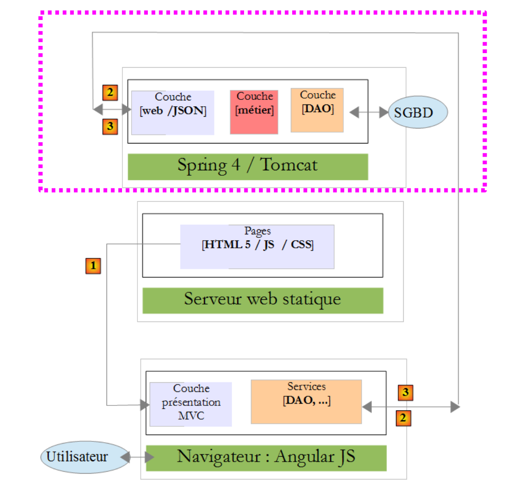 |
في البنية أعلاه، سنتناول الآن إنشاء خدمة الويب / JSON المبنية باستخدام إطار عمل Spring 4. سنكتبها في عدة خطوات:
- أولاً طبقات [الأعمال] و[DAO] (كائن الوصول إلى البيانات). سنستخدم Spring Data هنا؛
- ثم خدمة الويب JSON بدون مصادقة. سنستخدم هنا Spring MVC؛
- ثم سنضيف مكون المصادقة باستخدام Spring Security.
سنبدأ بشرح بنية قاعدة البيانات التي يقوم عليها التطبيق.
2.1. قاعدة البيانات
 |
قاعدة البيانات، المشار إليها فيما يلي باسم [ dbrdvmedecins]، هي قاعدة بيانات MySQL5 تحتوي على الجداول التالية:
 |
تتم إدارة المواعيد من خلال الجداول التالية:
- [doctors]: تحتوي على قائمة الأطباء في العيادة؛
- [clients]: تحتوي على قائمة مرضى العيادة؛
- [slots]: تحتوي على الفترات الزمنية المتاحة لكل طبيب؛
- [rv]: تحتوي على قائمة مواعيد الأطباء.
ترتبط الجداول [roles] و[users] و[users_roles] بالمصادقة. ولن نتناولها في الوقت الحالي.
العلاقات بين الجداول التي تدير المواعيد هي كما يلي:
 |
- تنتمي الفترة الزمنية إلى طبيب – ولدى الطبيب 0 أو أكثر من الفترات الزمنية؛
- يربط الموعد بين العميل والطبيب عبر الفترة الزمنية المخصصة للطبيب؛
- لدى العميل 0 موعد أو أكثر؛
- ترتبط الفترة الزمنية بـ 0 أو أكثر من المواعيد (في أيام مختلفة).
2.1.1. جدول [MEDECINS]
يحتوي على معلومات حول الأطباء الذين يديرهم تطبيق [RdvMedecins].
 |  |
- ID: رقم التعريف الذي يحدد هوية الطبيب — المفتاح الأساسي للجدول
- VERSION: الرقم الذي يحدد إصدار الصف في الجدول. يزداد هذا الرقم بمقدار 1 في كل مرة يتم فيها إجراء تغيير على الصف.
- LAST_NAME: لقب الطبيب
- FIRST_NAME: الاسم الأول للطبيب
- TITLE: لقبهم (السيدة، السيدة، السيد)
2.1.2. جدول [CLIENTS]
يتم تخزين عملاء الأطباء المختلفين في جدول [CLIENTS]:
 |  |
- ID: رقم التعريف الذي يحدد العميل - المفتاح الأساسي للجدول
- VERSION: الرقم الذي يحدد إصدار الصف في الجدول. يزداد هذا الرقم بمقدار 1 في كل مرة يتم فيها إجراء تغيير على الصف.
- LAST NAME: اسم عائلة العميل
- FIRST NAME: الاسم الأول للعميل
- العنوان: لقبهم (السيدة، السيدة، السيد)
2.1.3. جدول [المواعيد]
تسرد المواعيد المتاحة:
 |
 |
- ID: رقم تعريف الفترة الزمنية - المفتاح الأساسي للجدول (الصف 8)
- VERSION: الرقم الذي يحدد إصدار الصف في الجدول. يزداد هذا الرقم بمقدار 1 في كل مرة يتم فيها إجراء تغيير على الصف.
- DOCTOR_ID: رقم التعريف الذي يحدد الطبيب الذي تنتمي إليه هذه الفترة الزمنية – مفتاح خارجي في عمود DOCTORS(ID).
- START_TIME: وقت بدء الفترة الزمنية
- MSTART: دقائق بداية الفترة الزمنية
- HFIN: وقت انتهاء الفترة الزمنية
- MFIN: دقائق نهاية الفترة الزمنية
يشير الصف الثاني من جدول [SLOTS] (انظر [1] أعلاه) ، على سبيل المثال ، إلى أن الفترة رقم 2 تبدأ في الساعة 8:20 صباحًا وتنتهي في الساعة 8:40 صباحًا وتخص الطبيبة رقم 1 (السيدة ماري بيليسييه).
2.1.4. جدول [RV]
يُدرج المواعيد المحجوزة لكل طبيب:
 |
- ID: معرف فريد للموعد – المفتاح الأساسي
- DAY: يوم الموعد
- SLOT_ID: فترة الموعد – مفتاح خارجي في حقل [ID] في جدول [SLOTS] – يحدد كل من فترة الموعد والطبيب المعني.
- CLIENT_ID: معرف العميل الذي تم الحجز لصالحه – مفتاح خارجي في حقل [ID] بجدول [CLIENTS]
يحتوي هذا الجدول على قيد تفرد على قيم الأعمدة المرتبطة (DAY، SLOT_ID):
إذا كان أحد الصفوف في الجدول [RV] يحتوي على القيمة (DAY1، SLOT_ID1) للأعمدة (DAY، SLOT_ID)، فلا يمكن أن تظهر هذه القيمة في أي مكان آخر. وإلا، فهذا يعني أنه تم حجز موعدين في نفس الوقت لنفس الطبيب. من منظور برمجة Java، يقوم برنامج تشغيل JDBC الخاص بقاعدة البيانات بإصدار استثناء SQLException عند حدوث ذلك.
الصف الذي يحمل الرقم التعريفي 3 (انظر [1] أعلاه) يعني أنه تم حجز موعد للفترة رقم 20 والعميل رقم 4 في 23/08/2006. يوضح لنا جدول [SLOTS] أن الفترة رقم 20 تتوافق مع الفترة الزمنية 4:20 مساءً – 4:40 مساءً وتخص الطبيبة رقم 1 (السيدة ماري بيليسييه). يخبرنا الجدول [CLIENTS] أن العميل رقم 4 هو السيدة بريجيت بيسترو.
2.2. مقدمة إلى Spring Data
سنقوم بتنفيذ طبقة [DAO] للمشروع باستخدام Spring Data، وهو فرع من نظام Spring.
 |
يقدم موقع Spring الإلكتروني العديد من الدروس التعليمية للبدء في استخدام Spring [http://spring.io/guides]. سنستخدم إحداها لتقديم Spring Data. وللقيام بذلك، سنستخدم Spring Tool Suite (STS).
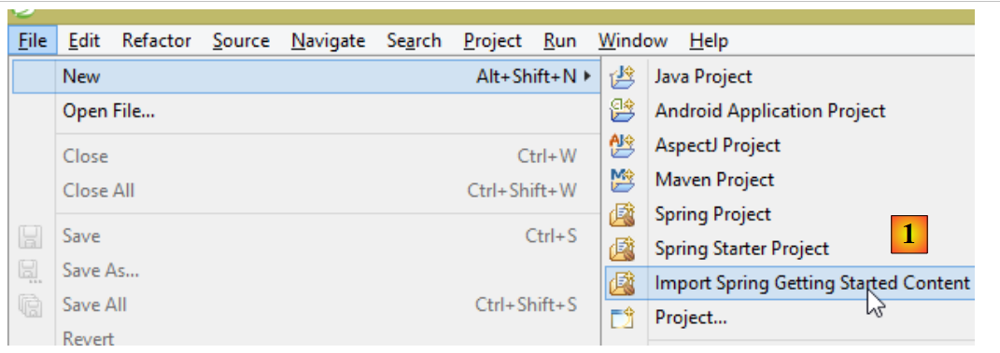 |
- في [1]، نقوم باستيراد أحد البرامج التعليمية من [spring.io/guides]؛
 |
- في [2]، نختار البرنامج التعليمي [Accessing Data Jpa]، الذي يوضح كيفية الوصول إلى قاعدة البيانات باستخدام Spring Data؛
- في [3]، نختار مشروعًا تم تكوينه بواسطة Maven؛
- في [4]، يتوفر البرنامج التعليمي في شكلين: [initial]، وهو نسخة فارغة تقوم بملئها باتباع البرنامج التعليمي، أو [complete]، وهي النسخة النهائية من البرنامج التعليمي. نختار الخيار الأخير؛
- في [5]، يمكنك اختيار عرض البرنامج التعليمي في متصفح؛
- في [6]، المشروع النهائي.
2.2.1. تكوين Maven للمشروع
يتم تكوين تبعيات Maven للمشروع في ملف [pom.xml]:
<groupId>org.springframework</groupId>
<artifactId>gs-accessing-data-jpa</artifactId>
<version>0.1.0</version>
<parent>
<groupId>org.springframework.boot</groupId>
<artifactId>spring-boot-starter-parent</artifactId>
<version>1.0.2.RELEASE</version>
</parent>
<dependencies>
<dependency>
<groupId>org.springframework.boot</groupId>
<artifactId>spring-boot-starter-data-jpa</artifactId>
</dependency>
<dependency>
<groupId>com.h2database</groupId>
<artifactId>h2</artifactId>
</dependency>
</dependencies>
<properties>
<!-- use UTF-8 for everything -->
<project.build.sourceEncoding>UTF-8</project.build.sourceEncoding>
<project.reporting.outputEncoding>UTF-8</project.reporting.outputEncoding>
<start-class>hello.Application</start-class>
</properties>
- الأسطر 5–9: تعريف مشروع Maven الأصلي. يحدد هذا المشروع معظم تبعيات المشروع. قد تكون هذه التبعيات كافية، وفي هذه الحالة لا تضاف أي تبعيات إضافية، أو قد لا تكون كافية، وفي هذه الحالة تضاف التبعيات المفقودة؛
- الأسطر 12–15: تحدد تبعية لـ [spring-boot-starter-data-jpa]. تحتوي هذه الأداة على فئات Spring Data؛
- الأسطر 16–19: تحدد تبعية لنظام إدارة قواعد البيانات H2، الذي يسمح لك بإنشاء وإدارة قواعد البيانات في الذاكرة.
دعونا نلقي نظرة على الفئات التي توفرها هذه التبعيات:
 |  |  |
هناك العديد منها:
- بعضها ينتمي إلى منظومة Spring (تلك التي تبدأ بـ spring)؛
- والبعض الآخر ينتمي إلى منظومة Hibernate (hibernate، jboss)، التي نستخدم تطبيق JPA الخاص بها هنا؛
- وبعضها الآخر عبارة عن مكتبات اختبار (JUnit، Hamcrest)؛
- وبعضها الآخر عبارة عن مكتبات تسجيل (log4j، logback، slf4j)؛
سنحتفظ بها جميعًا. بالنسبة لتطبيق الإنتاج، يجب أن نحتفظ فقط بتلك الضرورية.
في السطر 26 من ملف [pom.xml]، نجد السطر:
<start-class>hello.Application</start-class>
هذا السطر مرتبط بالأسطر التالية:
<build>
<plugins>
<plugin>
<artifactId>maven-compiler-plugin</artifactId>
</plugin>
<plugin>
<groupId>org.springframework.boot</groupId>
<artifactId>spring-boot-maven-plugin</artifactId>
</plugin>
</plugins>
</build>
الأسطر 6–9: يتيح لك [spring-boot-maven-plugin] إنشاء ملف JAR القابل للتنفيذ الخاص بالتطبيق. ثم تحدد السطر 26 من ملف [pom.xml] الفئة القابلة للتنفيذ لهذا الملف JAR.
2.2.2. طبقة [JPA]
يتم التعامل مع الوصول إلى قاعدة البيانات من خلال طبقة [JPA]، وهي واجهة برمجة تطبيقات Java Persistence:
 |
 |
التطبيق بسيط ويقوم بإدارة كيانات [Customer]. فئة [Customer] هي جزء من طبقة [JPA] وهي كما يلي:
package hello;
import javax.persistence.Entity;
import javax.persistence.GeneratedValue;
import javax.persistence.GenerationType;
import javax.persistence.Id;
@Entity
public class Customer {
@Id
@GeneratedValue(strategy = GenerationType.AUTO)
private long id;
private String firstName;
private String lastName;
protected Customer() {
}
public Customer(String firstName, String lastName) {
this.firstName = firstName;
this.lastName = lastName;
}
@Override
public String toString() {
return String.format("Customer[id=%d, firstName='%s', lastName='%s']", id, firstName, lastName);
}
}
يحتوي العميل على معرف [id] واسم أول [firstName] واسم أخير [lastName]. تمثل كل مثيل [Customer] صفًا في جدول قاعدة البيانات.
- السطر 8: تعليق JPA يضمن أن استمرارية مثيلات [Customer] (إنشاء، قراءة، تحديث، حذف) ستدار بواسطة تطبيق JPA. استنادًا إلى تبعيات Maven، يمكننا أن نرى أن تطبيق JPA/Hibernate قيد الاستخدام؛
- السطران 11-12: تعليقات JPA التي تربط حقل [id] بالمفتاح الأساسي لجدول [Customer]. يشير السطر 12 إلى أن تطبيق JPA سيستخدم طريقة إنشاء المفتاح الأساسي الخاصة بنظام إدارة قواعد البيانات المستخدم، وهو H2 في هذه الحالة؛
لا توجد تعليقات توضيحية أخرى لـ JPA. وبالتالي، سيتم استخدام القيم الافتراضية:
- سيتم تسمية جدول [Customer] على اسم الفئة، أي [Customer]؛
- سيتم تسمية أعمدة هذا الجدول على اسم حقول الفئة: [id, firstName, lastName]، مع ملاحظة أن حالة الأحرف لا تؤخذ في الاعتبار في أسماء أعمدة الجدول؛
لاحظ أن تطبيق JPA المستخدم لا يُسمى أبدًا.
2.2.3. طبقة [DAO]
 |
 |
تنفذ فئة [CustomerRepository] طبقة [DAO]. وفيما يلي شفرة البرمجة الخاصة بها:
package hello;
import java.util.List;
import org.springframework.data.repository.CrudRepository;
public interface CustomerRepository extends CrudRepository<Customer, Long> {
List<Customer> findByLastName(String lastName);
}
وبالتالي، فهذه واجهة وليست فئة (السطر 7). وهي تمتد واجهة [CrudRepository]، وهي واجهة Spring Data (السطر 5). يتم تحديد معلمات هذه الواجهة بواسطة نوعين: الأول هو نوع العناصر المدارة، وهو هنا نوع [Customer]؛ والثاني هو نوع المفتاح الأساسي للعناصر المدارة، وهو هنا نوع [Long]. واجهة [CrudRepository] هي كما يلي:
package org.springframework.data.repository;
import java.io.Serializable;
@NoRepositoryBean
public interface CrudRepository<T, ID extends Serializable> extends Repository<T, ID> {
<S extends T> S save(S entity);
<S extends T> Iterable<S> save(Iterable<S> entities);
T findOne(ID id);
boolean exists(ID id);
Iterable<T> findAll();
Iterable<T> findAll(Iterable<ID> ids);
long count();
void delete(ID id);
void delete(T entity);
void delete(Iterable<? extends T> entities);
void deleteAll();
}
تحدد هذه الواجهة عمليات CRUD (إنشاء – قراءة – تحديث – حذف) التي يمكن تنفيذها على نوع JPA T:
- السطر 8: تُستخدم طريقة
saveلتخزين الكيانTفي قاعدة البيانات. وهي تخزن الكيان باستخدام المفتاح الأساسي المخصص له بواسطة نظام إدارة قواعد البيانات (DBMS). كما تتيح لك تحديث الكيانTالمحدد بواسطة المفتاح الأساسيid. يعتمد الاختيار بين هذين الإجراءين على قيمة المفتاح الأساسي id: إذا كانت قيمة id فارغة، تتم عملية التخزين؛ وإلا، تتم عملية التحديث؛ - السطر 10: كما هو مذكور أعلاه، ولكن بالنسبة لقائمة الكيانات؛
- السطر 12: تسترد طريقة findOne كيان T المحدد بواسطة مفتاحه الأساسي id؛
- السطر 22: تسمح لك طريقة delete بحذف كيان T المحدد بواسطة مفتاحه الأساسي id؛
- الأسطر 24-28: أشكال مختلفة من طريقة [delete]؛
- السطر 16: تسترد طريقة [findAll] جميع كيانات T الدائمة؛
- السطر 18: كما هو مذكور أعلاه، ولكن يقتصر على الكيانات التي تم توفير قائمة بمعرفاتها؛
لنعد إلى واجهة [CustomerRepository]:
package hello;
import java.util.List;
import org.springframework.data.repository.CrudRepository;
public interface CustomerRepository extends CrudRepository<Customer, Long> {
List<Customer> findByLastName(String lastName);
}
- السطر 9 يسمح لك باسترداد [Customer] حسب [lastName]؛
وهذا كل شيء بالنسبة لطبقة [DAO]. لا توجد فئة تنفيذ للواجهة السابقة. يتم إنشاؤها في وقت التشغيل بواسطة [Spring Data]. يتم تنفيذ أساليب واجهة [CrudRepository] تلقائيًا. أما بالنسبة للأساليب المضافة إلى واجهة [CustomerRepository]، فهذا يعتمد على الحالة. لنعد إلى تعريف [Customer]:
private long id;
private String firstName;
private String lastName;
يتم تنفيذ الطريقة الموجودة في السطر 9 تلقائيًا بواسطة [Spring Data] لأنها تشير إلى حقل [lastName] (السطر 3) في [Customer]. عندما تصادف طريقة [findBySomething] في الواجهة المراد تنفيذها، تقوم Spring Data بتنفيذها باستخدام استعلام JPQL (لغة استعلامات الاستمرارية في Java) التالي:
لذلك، يجب أن يحتوي النوع T على حقل باسم [something]. وبالتالي، فإن الطريقة
بكود مشابه لما يلي:
return [em].createQuery("select c from Customer c where c.lastName=:value").setParameter("value",lastName).getResultList()
حيث يشير [em] إلى سياق ثبات JPA. وهذا ممكن فقط إذا كانت فئة [Customer] تحتوي على حقل باسم [lastName]، وهو ما يحدث بالفعل.
في الختام، في الحالات البسيطة، يسمح لنا Spring Data بتنفيذ طبقة [DAO] بواجهة بسيطة.
2.2.4. طبقة [console]
 |
 |
فئة [Application] هي كما يلي:
package hello;
import java.util.List;
import org.springframework.boot.SpringApplication;
import org.springframework.boot.autoconfigure.EnableAutoConfiguration;
import org.springframework.context.ConfigurableApplicationContext;
import org.springframework.context.annotation.Configuration;
@Configuration
@EnableAutoConfiguration
public class Application {
public static void main(String[] args) {
ConfigurableApplicationContext context = SpringApplication.run(Application.class);
CustomerRepository repository = context.getBean(CustomerRepository.class);
// save a couple of customers
repository.save(new Customer("Jack", "Bauer"));
repository.save(new Customer("Chloe", "O'Brian"));
repository.save(new Customer("Kim", "Bauer"));
repository.save(new Customer("David", "Palmer"));
repository.save(new Customer("Michelle", "Dessler"));
// fetch all customers
Iterable<Customer> customers = repository.findAll();
System.out.println("Customers found with findAll():");
System.out.println("-------------------------------");
for (Customer customer : customers) {
System.out.println(customer);
}
System.out.println();
// fetch an individual customer by ID
Customer customer = repository.findOne(1L);
System.out.println("Customer found with findOne(1L):");
System.out.println("--------------------------------");
System.out.println(customer);
System.out.println();
// fetch customers by last name
List<Customer> bauers = repository.findByLastName("Bauer");
System.out.println("Customer found with findByLastName('Bauer'):");
System.out.println("--------------------------------------------");
for (Customer bauer : bauers) {
System.out.println(bauer);
}
context.close();
}
}
- السطر 10: يشير إلى أن الفئة تُستخدم لتكوين Spring. يمكن بالفعل تكوين الإصدارات الحديثة من Spring في Java بدلاً من XML. يمكن استخدام كلتا الطريقتين في وقت واحد. في كود الفئة المُعلَّمة بـ [Configuration]، نجد عادةً حبوب Spring، أي تعريفات الفئات التي سيتم إنشاء مثيلات لها. هنا، لم يتم تعريف أي حبوب. من المهم ملاحظة أنه عند العمل مع نظام إدارة قواعد البيانات (DBMS)، يجب تعريف حبوب Spring المختلفة:
- [EntityManagerFactory] الذي يحدد تطبيق JPA المراد استخدامه،
- [DataSource] الذي يحدد مصدر البيانات المراد استخدامه،
- [TransactionManager] الذي يحدد مدير المعاملات المراد استخدامه؛
هنا، لم يتم تعريف أي من هذه الحروف.
- السطر 11: التعليق التوضيحي [EnableAutoConfiguration] هو تعليق توضيحي من مشروع [Spring Boot] (السطران 5-6). يوجه هذا التعليق Spring Boot عبر فئة [SpringApplication] (السطر 16) لتكوين التطبيق بناءً على المكتبات الموجودة في مسار الفئات الخاص به. نظرًا لوجود مكتبات Hibernate في مسار الفئات، سيتم تنفيذ حبة [entityManagerFactory] باستخدام Hibernate. نظرًا لوجود مكتبة H2 DBMS في مسار الفئات، سيتم تنفيذ حبة [dataSource] باستخدام H2. في bean [dataSource]، يجب علينا أيضًا تعريف اسم المستخدم وكلمة المرور. هنا، سيستخدم Spring Boot المسؤول الافتراضي لـ H2، الذي لا يحتوي على كلمة مرور. ونظرًا لوجود مكتبة [spring-tx] في مسار الفئات، سيتم استخدام مدير المعاملات في Spring.
بالإضافة إلى ذلك، سيتم فحص الدليل الذي يحتوي على فئة [Application] بحثًا عن حبوب يتم التعرف عليها ضمناً بواسطة Spring أو يتم تعريفها صراحةً بواسطة تعليقات Spring. وبالتالي، سيتم فحص فئتي [Customer] و [CustomerRepository]. نظرًا لأن الأولى تحتوي على تعليق [@Entity]، فسيتم تصنيفها ككيان يديره Hibernate. ونظرًا لأن الثانية تمتد واجهة [CrudRepository]، فسيتم تسجيلها كحبة Spring.
دعونا نفحص السطور 16-17 من الكود:
ConfigurableApplicationContext context = SpringApplication.run(Application.class);
CustomerRepository repository = context.getBean(CustomerRepository.class);
- السطر 1: يتم تنفيذ الطريقة الثابتة [run] لفئة [SpringApplication] في مشروع Spring Boot. معلمتها هي الفئة التي تحتوي على تعليق توضيحي [Configuration] أو [EnableAutoConfiguration]. بعد ذلك، سيتم تنفيذ كل ما تم شرحه سابقًا. والنتيجة هي سياق تطبيق Spring، أي مجموعة من الفاصوليا التي تديرها Spring؛
- السطر 17: نطلب حبة تُنفذ واجهة [CustomerRepository] من سياق Spring هذا. هنا، نسترد الفئة التي أنشأتها Spring Data لتنفيذ هذه الواجهة.
تستخدم العمليات التالية ببساطة أساليب bean التي تنفذ واجهة [CustomerRepository]. لاحظ في السطر 50 أن السياق مغلق. يكون إخراج وحدة التحكم كما يلي:
- الأسطر 1-8: شعار مشروع Spring Boot؛
- السطر 9: يتم تنفيذ فئة [hello.Application]؛
- السطر 10: [AnnotationConfigApplicationContext] هي فئة تنفذ واجهة [ApplicationContext] الخاصة بـ Spring. وهي عبارة عن حاوية bean؛
- السطر 11: يتم تنفيذ bean [entityManagerFactory] باستخدام فئة [LocalContainerEntityManagerFactory]، وهي فئة Spring؛
- السطر 12: يظهر [hibernate]. هذا هو تطبيق JPA الذي تم اختياره؛
- السطر 19: لهجة Hibernate هي متغير SQL الذي سيتم استخدامه مع نظام إدارة قواعد البيانات (DBMS). هنا، تشير لهجة [H2Dialect] إلى أن Hibernate سيعمل مع نظام إدارة قواعد البيانات H2؛
- الأسطر 22–24: يتم إنشاء الجدول [CUSTOMER]. وهذا يعني أنه تم تكوين Hibernate لإنشاء جداول من تعريفات JPA، وفي هذه الحالة تعريف JPA لفئة [Customer]؛
- الأسطر 27–32: سجلات Hibernate التي تظهر إدراج الصفوف في جدول [CUSTOMER]. وهذا يعني أن Hibernate قد تم تكوينه لإنشاء سجلات؛
- الأسطر 35–39: العملاء الخمسة الذين تم إدراجهم؛
- الأسطر 42–44: نتيجة طريقة [findOne] للواجهة؛
- الأسطر 47–50: نتائج طريقة [findByLastName]؛
- السطور 51 وما يليها: سجلات من إغلاق سياق Spring.
2.2.5. التكوين اليدوي لمشروع Spring Data
نقوم بنسخ المشروع السابق إلى مشروع [gs-accessing-data-jpa-2]:
 |
في هذا المشروع الجديد، لن نعتمد على التكوين التلقائي الذي يوفره Spring Boot. سنقوم بتكوينه يدويًا. قد يكون هذا مفيدًا إذا كانت التكوينات الافتراضية لا تناسب احتياجاتنا.
أولاً، سنحدد التبعيات الضرورية في ملف [pom.xml]:
<dependencies>
<!-- Spring Core -->
<dependency>
<groupId>org.springframework</groupId>
<artifactId>spring-core</artifactId>
<version>4.0.5.RELEASE</version>
</dependency>
<dependency>
<groupId>org.springframework</groupId>
<artifactId>spring-context</artifactId>
<version>4.0.5.RELEASE</version>
</dependency>
<dependency>
<groupId>org.springframework</groupId>
<artifactId>spring-beans</artifactId>
<version>4.0.5.RELEASE</version>
</dependency>
<!-- Spring transactions -->
<dependency>
<groupId>org.springframework</groupId>
<artifactId>spring-aop</artifactId>
<version>4.0.5.RELEASE</version>
</dependency>
<dependency>
<groupId>org.springframework</groupId>
<artifactId>spring-tx</artifactId>
<version>4.0.5.RELEASE</version>
</dependency>
<!-- Spring Data -->
<dependency>
<groupId>org.springframework.data</groupId>
<artifactId>spring-data-jpa</artifactId>
<version>1.5.2.RELEASE</version>
</dependency>
<!-- Spring Boot -->
<dependency>
<groupId>org.springframework.boot</groupId>
<artifactId>spring-boot</artifactId>
<version>1.0.2.RELEASE</version>
</dependency>
<!-- Hibernate -->
<dependency>
<groupId>org.hibernate</groupId>
<artifactId>hibernate-entitymanager</artifactId>
<version>4.3.4.Final</version>
</dependency>
<!-- H2 Database -->
<dependency>
<groupId>com.h2database</groupId>
<artifactId>h2</artifactId>
<version>1.4.178</version>
</dependency>
<!-- Commons DBCP -->
<dependency>
<groupId>commons-dbcp</groupId>
<artifactId>commons-dbcp</artifactId>
<version>1.4</version>
</dependency>
<dependency>
<groupId>commons-pool</groupId>
<artifactId>commons-pool</artifactId>
<version>1.6</version>
</dependency>
</dependencies>
- الأسطر 3–17: مكتبات Spring الأساسية؛
- الأسطر 19–28: مكتبات Spring لإدارة معاملات قاعدة البيانات؛
- الأسطر 30–34: Spring Data المستخدمة للوصول إلى قاعدة البيانات؛
- الأسطر 36–40: Spring Boot لتشغيل التطبيق؛
- الأسطر 48–52: نظام إدارة قواعد البيانات H2؛
- الأسطر 54–63: غالبًا ما تُستخدم قواعد البيانات مع مجموعات اتصالات مفتوحة، مما يتجنب فتح وإغلاق الاتصالات بشكل متكرر. هنا، يتم استخدام تطبيق [commons-dbcp]؛
لا يزال في [pom.xml]، نقوم بتغيير اسم الفئة القابلة للتنفيذ:
<properties>
...
<start-class>demo.console.Main</start-class>
</properties>
في المشروع الجديد، تظل كيان [Customer] وواجهة [CustomerRepository] دون تغيير. سنقوم بتعديل فئة [Application]، والتي سيتم تقسيمها إلى فئتين:
- [Config]، التي ستكون فئة التكوين:
- [Main]، التي ستكون فئة التنفيذ؛
 |
الفئة القابلة للتنفيذ [Main] هي نفسها كما كانت من قبل، بدون تعليقات التكوين:
package demo.console;
import java.util.List;
import org.springframework.boot.SpringApplication;
import org.springframework.context.ConfigurableApplicationContext;
import demo.config.Config;
import demo.entities.Customer;
import demo.repositories.CustomerRepository;
public class Main {
public static void main(String[] args) {
ConfigurableApplicationContext context = SpringApplication.run(Config.class);
CustomerRepository repository = context.getBean(CustomerRepository.class);
...
context.close();
}
}
- السطر 12: لم تعد فئة [Main] تحتوي على أي تعليقات توضيحية للتكوين؛
- السطر 16: يتم تشغيل التطبيق باستخدام Spring Boot. المعلمة [Config.class] هي فئة التكوين الجديدة للمشروع؛
فئة [Config] التي تهيئ المشروع هي كما يلي:
package demo.config;
import javax.persistence.EntityManagerFactory;
import javax.sql.DataSource;
import org.apache.commons.dbcp.BasicDataSource;
import org.springframework.context.annotation.Bean;
import org.springframework.context.annotation.Configuration;
import org.springframework.data.jpa.repository.config.EnableJpaRepositories;
import org.springframework.orm.jpa.JpaTransactionManager;
import org.springframework.orm.jpa.JpaVendorAdapter;
import org.springframework.orm.jpa.LocalContainerEntityManagerFactoryBean;
import org.springframework.orm.jpa.vendor.Database;
import org.springframework.orm.jpa.vendor.HibernateJpaVendorAdapter;
import org.springframework.transaction.PlatformTransactionManager;
import org.springframework.transaction.annotation.EnableTransactionManagement;
//@ComponentScan(basePackages = { "demo" })
//@EntityScan(basePackages = { "demo.entities" })
@EnableTransactionManagement
@EnableJpaRepositories(basePackages = { "demo.repositories" })
@Configuration
public class Config {
// h2 data source
@Bean
public DataSource dataSource() {
BasicDataSource dataSource = new BasicDataSource();
dataSource.setDriverClassName("org.h2.Driver");
dataSource.setUrl("jdbc:h2:./demo");
dataSource.setUsername("sa");
dataSource.setPassword("");
return dataSource;
}
// the provider JPA
@Bean
public JpaVendorAdapter jpaVendorAdapter() {
HibernateJpaVendorAdapter hibernateJpaVendorAdapter = new HibernateJpaVendorAdapter();
hibernateJpaVendorAdapter.setShowSql(false);
hibernateJpaVendorAdapter.setGenerateDdl(true);
hibernateJpaVendorAdapter.setDatabase(Database.H2);
return hibernateJpaVendorAdapter;
}
// EntityManagerFactory
@Bean
public EntityManagerFactory entityManagerFactory(JpaVendorAdapter jpaVendorAdapter, DataSource dataSource) {
LocalContainerEntityManagerFactoryBean factory = new LocalContainerEntityManagerFactoryBean();
factory.setJpaVendorAdapter(jpaVendorAdapter);
factory.setPackagesToScan("demo.entities");
factory.setDataSource(dataSource);
factory.afterPropertiesSet();
return factory.getObject();
}
// Transaction manager
@Bean
public PlatformTransactionManager transactionManager(EntityManagerFactory entityManagerFactory) {
JpaTransactionManager txManager = new JpaTransactionManager();
txManager.setEntityManagerFactory(entityManagerFactory);
return txManager;
}
}
- السطر 22: تجعل العلامة [@Configuration] فئة [Config] فئة تكوين Spring؛
- السطر 21: تحدد العلامة [@EnableJpaRepositories] الدلائل التي توجد فيها واجهات Spring Data [CrudRepository]. ستصبح هذه الواجهات مكونات Spring وستكون متاحة في سياقها؛
- السطر 20: تشير العلامة [@EnableTransactionManagement] إلى أن طرق واجهات [CrudRepository] يجب أن تُنفَّذ ضمن معاملة؛
- السطر 19: تحدد علامة [@EntityScan] الدلائل التي يجب البحث فيها عن كيانات JPA. وقد تم تعليقها هنا لأن هذه المعلومات تم توفيرها صراحةً في السطر 50. يجب أن تكون هذه العلامة موجودة في حالة استخدام وضع [@EnableAutoConfiguration] وعدم وجود كيانات JPA في نفس الدليل الذي توجد فيه فئة التكوين؛
- السطر 18: تسمح لك علامة [@ComponentScan] بإدراج الدلائل التي يجب البحث فيها عن مكونات Spring. مكونات Spring هي فئات تم تمييزها بعلامات Spring مثل @Service و@Component و@Controller، إلخ. هنا، لا توجد مكونات أخرى غير تلك المحددة داخل فئة [Config]، لذا تم تعليق هذه العلامة؛
- الأسطر 25–33: تحدد مصدر البيانات، قاعدة بيانات H2. إن تعليق @Bean في السطر 25 هو الذي يجعل الكائن الذي تم إنشاؤه بواسطة هذه الطريقة مكونًا تديره Spring. يمكن أن يكون اسم الطريقة هنا أي شيء. ومع ذلك، يجب تسميته [dataSource] إذا كان EntityManagerFactory في السطر 47 غائبًا وتم تعريفه عبر التكوين التلقائي؛
- السطر 29: سيتم تسمية قاعدة البيانات [demo] وسيتم إنشاؤها في مجلد المشروع؛
- الأسطر 36-43: تعريف تطبيق JPA المستخدم، وهو في هذه الحالة تطبيق Hibernate. يمكن أن يكون اسم الطريقة هنا أي شيء؛
- السطر 39: لا توجد سجلات SQL؛
- السطر 30: سيتم إنشاء قاعدة البيانات إذا لم تكن موجودة؛
- الأسطر 46-54: تحدد EntityManagerFactory التي ستدير استمرارية JPA. يجب تسمية الطريقة [entityManagerFactory]؛
- السطر 47: تتلقى الطريقة معلمتين من أنواع الحبتين المحددتين سابقًا. سيتم بعد ذلك إنشاء هاتين الحبتين وحقنهما بواسطة Spring كمعلمات للطريقة؛
- السطر 49: يحدد تنفيذ JPA المراد استخدامه؛
- السطر 50: يحدد الدلائل التي يمكن العثور فيها على كيانات JPA؛
- السطر 51: يحدد مصدر البيانات المراد إدارته؛
- الأسطر 57–62: مدير المعاملات. يجب تسمية الطريقة [transactionManager]. تتلقى الفاصوليا من الأسطر 46–54 كمعلمة؛
- السطر 60: يرتبط مدير المعاملات بـ EntityManagerFactory؛
يمكن تعريف الطرق السابقة بأي ترتيب.
يؤدي تشغيل المشروع إلى نفس النتائج. يظهر ملف جديد في مجلد المشروع، وهو ملف قاعدة بيانات H2:
 |
أخيرًا، يمكننا الاستغناء عن Spring Boot. نقوم بإنشاء فئة قابلة للتنفيذ ثانية [Main2]:
 |
تحتوي فئة [Main2] على الكود التالي:
package demo.console;
import java.util.List;
import org.springframework.context.annotation.AnnotationConfigApplicationContext;
import demo.config.Config;
import demo.entities.Customer;
import demo.repositories.CustomerRepository;
public class Main2 {
public static void main(String[] args) {
AnnotationConfigApplicationContext context = new AnnotationConfigApplicationContext(Config.class);
CustomerRepository repository = context.getBean(CustomerRepository.class);
....
context.close();
}
}
- السطر 15: يتم الآن استخدام فئة التكوين [Config] بواسطة فئة Spring [AnnotationConfigApplicationContext]. كما هو موضح في السطر 5، لم يعد هناك أي اعتماد على Spring Boot.
يؤدي التنفيذ إلى نفس النتائج كما في السابق.
2.2.6. إنشاء أرشيف قابل للتنفيذ
لإنشاء أرشيف قابل للتنفيذ للمشروع، اتبع الخطوات التالية:
 |
- في [1]: قم بإنشاء تكوين وقت التشغيل؛
- في [2]: من النوع [تطبيق Java]
- في [3]: حدد المشروع المراد تشغيله (استخدم زر "تصفح")؛
- في [4]: حدد الفئة المراد تشغيلها؛
- في [5]: اسم تكوين التشغيل — يمكن أن يكون أي شيء؛
 |
- في [6]: تصدير المشروع؛
- في [7]: كأرشيف JAR قابل للتنفيذ؛
- في [8]: حدد مسار واسم الملف القابل للتنفيذ المراد إنشاؤه؛
- في [9]: اسم تكوين التشغيل الذي تم إنشاؤه في [5]؛
بمجرد الانتهاء من ذلك، افتح وحدة تحكم في المجلد الذي يحتوي على الأرشيف القابل للتنفيذ:
يتم تنفيذ الأرشيف على النحو التالي:
.....\dist>java -jar gs-accessing-data-jpa-2.jar
النتائج المعروضة في وحدة التحكم هي كما يلي:
2.2.7. إنشاء مشروع Spring Data جديد
لإنشاء قالب مشروع Spring Data، اتبع الخطوات التالية:
 |
- في [1]، أنشئ مشروعًا جديدًا؛
- في [2]: حدد [Spring Starter Project]؛
- سيكون المشروع الذي تم إنشاؤه مشروع Maven. في [3]، حدد اسم مجموعة المشروع؛
- في [4]، حدد اسم الأداة (ملف JAR في هذه الحالة) التي سيتم إنشاؤها عند بناء المشروع؛
- في [5]: حدد حزمة الفئة القابلة للتنفيذ التي سيتم إنشاؤها في المشروع؛
- في [6]: اسم المشروع في Eclipse – يمكن أن يكون أي شيء (لا يجب أن يكون هو نفسه [4])؛
- في [7]: حدد أنك تقوم بإنشاء مشروع بطبقة [JPA]. سيتم بعد ذلك تضمين التبعيات المطلوبة لمثل هذا المشروع في ملف [pom.xml]؛
 |
- في [8]: المشروع الذي تم إنشاؤه؛
يتضمن ملف [pom.xml] التبعيات المطلوبة لمشروع JPA:
<parent>
<groupId>org.springframework.boot</groupId>
<artifactId>spring-boot-starter-parent</artifactId>
<version>1.1.0.RELEASE</version>
<relativePath/> <!-- lookup parent from repository -->
</parent>
<dependencies>
<dependency>
<groupId>org.springframework.boot</groupId>
<artifactId>spring-boot-starter-data-jpa</artifactId>
</dependency>
<dependency>
<groupId>org.springframework.boot</groupId>
<artifactId>spring-boot-starter-test</artifactId>
<scope>test</scope>
</dependency>
</dependencies>
- الأسطر 9–12: التبعيات المطلوبة لـ JPA — ستتضمن [Spring Data]؛
- الأسطر 13–17: التبعيات المطلوبة لاختبارات JUnit المدمجة مع Spring؛
الفئة القابلة للتنفيذ [Application] لا تقوم بأي شيء ولكنها مهيأة مسبقًا:
package istia.st;
import org.springframework.boot.SpringApplication;
import org.springframework.boot.autoconfigure.EnableAutoConfiguration;
import org.springframework.context.annotation.ComponentScan;
import org.springframework.context.annotation.Configuration;
@Configuration
@ComponentScan
@EnableAutoConfiguration
public class Application {
public static void main(String[] args) {
SpringApplication.run(Application.class, args);
}
}
فئة الاختبار [ApplicationTests] لا تقوم بأي شيء ولكنها مهيأة مسبقًا:
package istia.st;
import org.junit.Test;
import org.junit.runner.RunWith;
import org.springframework.boot.test.SpringApplicationConfiguration;
import org.springframework.test.context.junit4.SpringJUnit4ClassRunner;
@RunWith(SpringJUnit4ClassRunner.class)
@SpringApplicationConfiguration(classes = Application.class)
public class ApplicationTests {
@Test
public void contextLoads() {
}
}
- السطر 9: تسمح علامة [@SpringApplicationConfiguration] باستخدام ملف التكوين [Application]. وبالتالي ستستفيد فئة الاختبار من جميع الحبوب المحددة في هذا الملف؛
- السطر 8: تتيح العلامة [@RunWith] تكامل Spring مع JUnit: يمكن تنفيذ الفئة كاختبار JUnit. [@RunWith] هي علامة JUnit (السطر 4)، في حين أن فئة [SpringJUnit4ClassRunner] هي فئة Spring (السطر 6)؛
الآن بعد أن أصبح لدينا هيكل تطبيق JPA، يمكننا إكماله لكتابة طبقة الثبات من جانب الخادم لتطبيق إدارة المواعيد الخاص بنا.
2.3. مشروع خادم Eclipse
 |
 |
المكونات الرئيسية للمشروع هي كما يلي:
- [pom.xml]: ملف تكوين Maven الخاص بالمشروع؛
- [rdvmedecins.entities]: كيانات JPA؛
- [rdvmedecins.repositories]: واجهات Spring Data للوصول إلى كيانات JPA؛
- [rdvmedecins.metier]: طبقة [الأعمال]؛
- [rdvmedecins.domain]: الكيانات التي تتعامل معها طبقة [الأعمال]؛
- [rdvmdecins.config]: فئات تكوين طبقة الاستمرارية؛
- [rdvmedecins.boot]: تطبيق وحدة تحكم أساسي؛
2.4. تكوين Maven
 |  |  |
فيما يلي ملف [pom.xml] الخاص بالمشروع:
<?xml version="1.0" encoding="UTF-8"?>
<project xmlns="http://maven.apache.org/POM/4.0.0" xsi:schemaLocation="http://maven.apache.org/POM/4.0.0 http://maven.apache.org/maven-v4_0_0.xsd"
xmlns:xsi="http://www.w3.org/2001/XMLSchema-instance">
<modelVersion>4.0.0</modelVersion>
<groupId>istia.st.spring4.rdvmedecins</groupId>
<artifactId>rdvmedecins-metier-dao</artifactId>
<version>0.0.1-SNAPSHOT</version>
<parent>
<groupId>org.springframework.boot</groupId>
<artifactId>spring-boot-starter-parent</artifactId>
<version>1.0.0.RELEASE</version>
</parent>
<dependencies>
<dependency>
<groupId>org.springframework.boot</groupId>
<artifactId>spring-boot-starter-data-jpa</artifactId>
</dependency>
<dependency>
<groupId>org.springframework.boot</groupId>
<artifactId>spring-boot-starter-test</artifactId>
<scope>test</scope>
</dependency>
<dependency>
<groupId>mysql</groupId>
<artifactId>mysql-connector-java</artifactId>
</dependency>
<dependency>
<groupId>commons-dbcp</groupId>
<artifactId>commons-dbcp</artifactId>
</dependency>
<dependency>
<groupId>commons-pool</groupId>
<artifactId>commons-pool</artifactId>
</dependency>
<dependency>
<groupId>com.fasterxml.jackson.core</groupId>
<artifactId>jackson-databind</artifactId>
</dependency>
<dependency>
<groupId>com.google.guava</groupId>
<artifactId>guava</artifactId>
<version>16.0.1</version>
</dependency>
</dependencies>
<properties>
<!-- use UTF-8 for everything -->
<project.build.sourceEncoding>UTF-8</project.build.sourceEncoding>
<project.reporting.outputEncoding>UTF-8</project.reporting.outputEncoding>
<start-class>istia.st.spring.data.main.Application</start-class>
</properties>
<build>
<plugins>
<plugin>
<artifactId>maven-compiler-plugin</artifactId>
</plugin>
<plugin>
<groupId>org.springframework.boot</groupId>
<artifactId>spring-boot-maven-plugin</artifactId>
</plugin>
</plugins>
</build>
<repositories>
<repository>
<id>spring-milestones</id>
<name>Spring Milestones</name>
<url>http://repo.spring.io/libs-milestone</url>
<snapshots>
<enabled>false</enabled>
</snapshots>
</repository>
<repository>
<id>org.jboss.repository.releases</id>
<name>JBoss Maven Release Repository</name>
<url>https://repository.jboss.org/nexus/content/repositories/releases</url>
<snapshots>
<enabled>false</enabled>
</snapshots>
</repository>
</repositories>
<pluginRepositories>
<pluginRepository>
<id>spring-milestones</id>
<name>Spring Milestones</name>
<url>http://repo.spring.io/libs-milestone</url>
<snapshots>
<enabled>false</enabled>
</snapshots>
</pluginRepository>
</pluginRepositories>
</project>
- الأسطر 8–12: يعتمد المشروع على المشروع الأصلي [spring-boot-starter-parent]. بالنسبة للتبعيات الموجودة بالفعل في المشروع الأصلي، لم يتم تحديد أي إصدار. سيتم استخدام الإصدار المحدد في المشروع الأصلي. يتم إعلان التبعيات الأخرى كالمعتاد؛
- الأسطر 14–17: لـ Spring Data؛
- الأسطر 18–22: لاختبارات JUnit؛
- الأسطر 23–26: برنامج تشغيل JDBC لنظام إدارة قواعد البيانات MySQL5؛
- الأسطر 27–34: تجمع اتصالات Commons DBCP؛
- الأسطر 35-38: مكتبة Jackson لمعالجة JSON؛
- الأسطر 39–43: مكتبة Google Collections؛
يستخدم الإصدار 1.1.0.RC1 من [spring-boot-starter-parent] إصدارات المكتبات التالية:
2.5. كيانات JPA
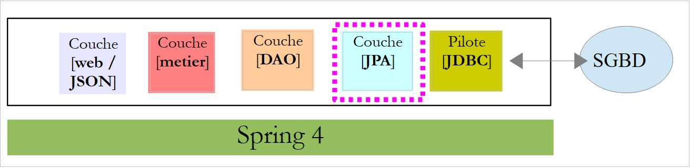 |
كيانات JPA هي الكائنات التي تغلف الصفوف في جداول قاعدة البيانات.
 |
فئة [AbstractEntity] هي الفئة الأم للكيانات [Person، Slot، Appointment]. وتعريفها كما يلي:
package rdvmedecins.entities;
import java.io.Serializable;
import javax.persistence.GeneratedValue;
import javax.persistence.GenerationType;
import javax.persistence.Id;
import javax.persistence.MappedSuperclass;
import javax.persistence.Version;
@MappedSuperclass
public class AbstractEntity implements Serializable {
private static final long serialVersionUID = 1L;
@Id
@GeneratedValue(strategy = GenerationType.AUTO)
protected Long id;
@Version
protected Long version;
@Override
public int hashCode() {
int hash = 0;
hash += (id != null ? id.hashCode() : 0);
return hash;
}
// initialization
public AbstractEntity build(Long id, Long version) {
this.id = id;
this.version = version;
return this;
}
@Override
public boolean equals(Object entity) {
String class1 = this.getClass().getName();
String class2 = entity.getClass().getName();
if (!class2.equals(class1)) {
return false;
}
AbstractEntity other = (AbstractEntity) entity;
return this.id == other.id;
}
// getters and setters
..
}
- السطر 11: تشير العلامة [@MappedSuperclass] إلى أن الفئة المُعلَّمة هي فئة أصلية لكيانات JPA [@Entity]؛
- الأسطر 15–17: تحدد المفتاح الأساسي [id] لكل كيان. إن علامة [@Id] هي التي تجعل الحقل [id] مفتاحًا أساسيًا. وتشير علامة [@GeneratedValue(strategy = GenerationType.AUTO)] إلى أن قيمة هذا المفتاح الأساسي يتم إنشاؤها بواسطة نظام إدارة قواعد البيانات (DBMS) وأنه لا يتم فرض أي وضع إنشاء؛
- الأسطر 18–19: تحدد إصدار كل كيان. سيقوم تطبيق JPA بزيادة رقم الإصدار هذا في كل مرة يتم فيها تعديل الكيان. يُستخدم هذا الرقم لمنع التحديثات المتزامنة للكيان من قبل مستخدمين مختلفين: يقرأ مستخدمان، U1 و U2، الكيان E برقم إصدار يساوي V1. يقوم U1 بتعديل E ويحفظ هذا التغيير في قاعدة البيانات: ثم يتغير رقم الإصدار إلى V1+1. يقوم U2 بدوره بتعديل E ويحفظ هذا التغيير في قاعدة البيانات: سيتلقى استثناءً لأن إصداره (V1) يختلف عن الإصدار الموجود في قاعدة البيانات (V1+1)؛
- الأسطر 29-33: تقوم طريقة [build] بتهيئة الحقلين في [AbstractEntity]. تُرجع هذه الطريقة مرجعًا إلى مثيل [AbstractEntity] الذي تم تهيئته؛
- الأسطر 36–44: يتم إعادة تعريف طريقة [equals] للفئة: يُعتبر الكيانان متساويين إذا كان لهما نفس اسم الفئة ونفس معرف الهوية؛
الكيان [Person] هو الفئة الأم لكيانات [Doctor] و [Client]:
package rdvmedecins.entities;
import javax.persistence.Column;
import javax.persistence.MappedSuperclass;
@MappedSuperclass
public class Personne extends AbstractEntity {
private static final long serialVersionUID = 1L;
// attributes of a person
@Column(length = 5)
private String titre;
@Column(length = 20)
private String nom;
@Column(length = 20)
private String prenom;
// default builder
public Personne() {
}
// builder with parameters
public Personne(String titre, String nom, String prenom) {
this.titre = titre;
this.nom = nom;
this.prenom = prenom;
}
// toString
public String toString() {
return String.format("Personne[%s, %s, %s, %s, %s]", id, version, titre, nom, prenom);
}
// getters and setters
...
}
- السطر 6: تشير العلامة [@MappedSuperclass] إلى أن الفئة المُعلَّمة هي فئة أم لكيانات JPA [@Entity]؛
- الأسطر 10–15: الشخص لديه لقب (Ms.)، واسم أول (Jacqueline)، واسم عائلة (Tatou). لم يتم توفير أي معلومات حول أعمدة الجدول. وبالتالي، سيكون لها افتراضيًا نفس أسماء الحقول؛
الكيان [Medecin] هو كما يلي:
package rdvmedecins.entities;
import javax.persistence.Entity;
import javax.persistence.Table;
@Entity
@Table(name = "medecins")
public class Medecin extends Personne {
private static final long serialVersionUID = 1L;
// default builder
public Medecin() {
}
// builder with parameters
public Medecin(String titre, String nom, String prenom) {
super(titre, nom, prenom);
}
public String toString() {
return String.format("Medecin[%s]", super.toString());
}
}
- السطر 6: الفئة هي كيان JPA؛
- السطر 7: مرتبطة بجدول [DOCTORS] في قاعدة البيانات؛
- السطر 8: الكيان [Doctor] مشتق من الكيان [Person]؛
يمكن تهيئة طبيب على النحو التالي:
وإذا أردنا أيضًا تعيين معرف وإصدار له، فيمكننا كتابة:
حيث طريقة [build] هي الطريقة المُعرَّفة في [AbstractEntity].
الكيان [Client] هو كما يلي:
package rdvmedecins.entities;
import javax.persistence.Entity;
import javax.persistence.Table;
@Entity
@Table(name = "clients")
public class Client extends Personne {
private static final long serialVersionUID = 1L;
// default builder
public Client() {
}
// builder with parameters
public Client(String titre, String nom, String prenom) {
super(titre, nom, prenom);
}
// identity
public String toString() {
return String.format("Client[%s]", super.toString());
}
}
- السطر 6: الفئة هي كيان JPA؛
- السطر 7: مرتبطة بجدول [CLIENTS] في قاعدة البيانات؛
- السطر 8: الكيان [Client] مشتق من الكيان [Person]؛
الكيان [TimeSlot] هو كما يلي:
package rdvmedecins.entities;
import javax.persistence.Column;
import javax.persistence.Entity;
import javax.persistence.FetchType;
import javax.persistence.JoinColumn;
import javax.persistence.ManyToOne;
import javax.persistence.Table;
@Entity
@Table(name = "creneaux")
public class Creneau extends AbstractEntity {
private static final long serialVersionUID = 1L;
// characteristics of a RV slot
private int hdebut;
private int mdebut;
private int hfin;
private int mfin;
// a slot is linked to a doctor
@ManyToOne(fetch = FetchType.LAZY)
@JoinColumn(name = "id_medecin")
private Medecin medecin;
// foreign key
@Column(name = "id_medecin", insertable = false, updatable = false)
private long idMedecin;
// default builder
public Creneau() {
}
// builder with parameters
public Creneau(Medecin medecin, int hdebut, int mdebut, int hfin, int mfin) {
this.medecin = medecin;
this.hdebut = hdebut;
this.mdebut = mdebut;
this.hfin = hfin;
this.mfin = mfin;
}
// toString
public String toString() {
return String.format("Créneau[%d, %d, %d, %d:%d, %d:%d]", id, version, idMedecin, hdebut, mdebut, hfin, mfin);
}
// foreign key
public long getIdMedecin() {
return idMedecin;
}
// setters - getters
...
}
- السطر 10: الفئة هي كيان JPA؛
- السطر 11: مرتبطة بجدول [CRENEAUX] في قاعدة البيانات؛
- السطر 12: الكيان [Creneau] مشتق من الكيان [AbstractEntity] وبالتالي يرث الحقول [id] و [version]؛
- السطر 16: وقت بدء الفترة الزمنية (14)؛
- السطر 17: دقائق بداية الفترة الزمنية (20)؛
- السطر 18: وقت انتهاء الفترة (14)؛
- السطر 19: دقائق نهاية الفترة (40)؛
- الأسطر 22-24: الطبيب الذي يمتلك الفترة الزمنية. يحتوي الجدول [CRENEAUX] على مفتاح خارجي في الجدول [MEDECINS]. يتم تمثيل هذه العلاقة في الأسطر 22-24؛
- السطر 22: تشير التعليقة التوضيحية [@ManyToOne] إلى علاقة متعددة إلى واحد (فترات) إلى واحد (طبيب). تحدد السمة [fetch=FetchType.LAZY] أنه عند طلب كيان [Creneau] من سياق الاستمرارية ويجب استرداده من قاعدة البيانات، لا يتم استرداد كيان [Medecin] معه. وتتمثل ميزة هذا الوضع في أن كيان [Doctor] لا يتم استرداده إلا إذا طلبه المطور. وهذا يوفر الذاكرة ويحسن الأداء؛
- السطر 23: يحدد اسم عمود المفتاح الخارجي في جدول [CRENEAUX]؛
- السطران 27-28: المفتاح الخارجي في جدول [MEDECINS]؛
- السطر 27: تم استخدام عمود [ID_MEDECIN] بالفعل في السطر 23. وهذا يعني أنه يمكن تعديله بطريقتين مختلفتين، وهو ما لا يسمح به معيار JPA. لذلك نضيف السمات [insertable = false, updatable = false]، مما يعني أن العمود يمكن قراءته فقط؛
الكيان [Rv] هو كما يلي:
package rdvmedecins.entities;
import java.util.Date;
import javax.persistence.Column;
import javax.persistence.Entity;
import javax.persistence.FetchType;
import javax.persistence.JoinColumn;
import javax.persistence.ManyToOne;
import javax.persistence.Table;
import javax.persistence.Temporal;
import javax.persistence.TemporalType;
@Entity
@Table(name = "rv")
public class Rv extends AbstractEntity {
private static final long serialVersionUID = 1L;
// characteristics of an Rv
@Temporal(TemporalType.DATE)
private Date jour;
// an appointment is linked to a customer
@ManyToOne(fetch = FetchType.LAZY)
@JoinColumn(name = "id_client")
private Client client;
// an appointment is linked to a time slot
@ManyToOne(fetch = FetchType.LAZY)
@JoinColumn(name = "id_creneau")
private Creneau creneau;
// foreign keys
@Column(name = "id_client", insertable = false, updatable = false)
private long idClient;
@Column(name = "id_creneau", insertable = false, updatable = false)
private long idCreneau;
// default builder
public Rv() {
}
// with parameters
public Rv(Date jour, Client client, Creneau creneau) {
this.jour = jour;
this.client = client;
this.creneau = creneau;
}
// toString
public String toString() {
return String.format("Rv[%d, %s, %d, %d]", id, jour, client.id, creneau.id);
}
// foreign keys
public long getIdCreneau() {
return idCreneau;
}
public long getIdClient() {
return idClient;
}
// getters and setters
...
}
- السطر 14: الفئة هي كيان JPA؛
- السطر 15: مرتبطة بالجدول [RV] في قاعدة البيانات؛
- السطر 16: الكيان [Rv] مشتق من الكيان [AbstractEntity] وبالتالي يرث الحقول [id] و [version]؛
- السطر 21: تاريخ الموعد؛
- السطر 20: يحتوي نوع Java [Date] على التاريخ والوقت. هنا نحدد أنه يتم استخدام التاريخ فقط؛
- الأسطر 24-26: العميل الذي تم تحديد هذا الموعد من أجله. يحتوي الجدول [RV] على مفتاح خارجي في الجدول [CLIENTS]. يتم تمثيل هذه العلاقة بالأسطر 24-26؛
- الأسطر 29-31: الفترة الزمنية للموعد. يحتوي الجدول [RV] على مفتاح خارجي في الجدول [CRENEAUX]. يتم تمثيل هذه العلاقة بالأسطر 29-31؛
- الصفوف 34-35: المفتاح الخارجي [idClient]؛
- الصفوف 36-37: المفتاح الخارجي [idCreneau]؛
2.6. طبقة [DAO]
 |
سنقوم بتنفيذ طبقة [DAO] باستخدام Spring Data:
 |
يتم تنفيذ طبقة [DAO] باستخدام أربع واجهات Spring Data:
- [ClientRepository]: توفر الوصول إلى كيانات JPA [Client]؛
- [CreneauRepository]: توفر الوصول إلى كيانات JPA [Creneau]؛
- [MedecinRepository]: توفر الوصول إلى كيانات JPA [Medecin]؛
- [RvRepository]: توفر الوصول إلى كيانات JPA [Rv]؛
واجهة [MedecinRepository] هي كما يلي:
package rdvmedecins.repositories;
import org.springframework.data.repository.CrudRepository;
import rdvmedecins.entities.Medecin;
public interface MedecinRepository extends CrudRepository<Medecin, Long> {
}
- السطر 7: ترث واجهة [MedecinRepository] ببساطة الطرق من واجهة [CrudRepository] دون إضافة أي طرق أخرى؛
واجهة [ClientRepository] هي كما يلي:
package rdvmedecins.repositories;
import org.springframework.data.repository.CrudRepository;
import rdvmedecins.entities.Client;
public interface ClientRepository extends CrudRepository<Client, Long> {
}
- السطر 7: ترث واجهة [ClientRepository] ببساطة الطرق من واجهة [CrudRepository] دون إضافة أي طرق أخرى؛
واجهة [CreneauRepository] هي كما يلي:
package rdvmedecins.repositories;
import org.springframework.data.jpa.repository.Query;
import org.springframework.data.repository.CrudRepository;
import rdvmedecins.entities.Creneau;
public interface CreneauRepository extends CrudRepository<Creneau, Long> {
// list of physician slots
@Query("select c from Creneau c where c.medecin.id=?1")
Iterable<Creneau> getAllCreneaux(long idMedecin);
}
- السطر 8: ترث واجهة [CreneauRepository] طرق واجهة [CrudRepository]؛
- السطران 10-11: تسترد طريقة [getAllCreneaux] الفترات الزمنية المتاحة للطبيب؛
- السطر 11: المعلمة هي معرف الطبيب. والنتيجة هي قائمة بالمواعيد المتاحة في شكل كائن [Iterable<Creneau>]؛
- السطر 10: تُستخدم العلامة [@Query] لتحديد استعلام JPQL (لغة استعلام الاستمرارية في Java) الذي ينفذ الطريقة. سيتم استبدال المعلمة [?1] بالمعلمة [idMedecin] الخاصة بالطريقة؛
واجهة [RvRepository] هي كما يلي:
package rdvmedecins.repositories;
import java.util.Date;
import org.springframework.data.jpa.repository.Query;
import org.springframework.data.repository.CrudRepository;
import rdvmedecins.entities.Rv;
public interface RvRepository extends CrudRepository<Rv, Long> {
@Query("select rv from Rv rv left join fetch rv.client c left join fetch rv.creneau cr where cr.medecin.id=?1 and rv.jour=?2")
Iterable<Rv> getRvMedecinJour(long idMedecin, Date jour);
}
- السطر 10: ترث واجهة [RvRepository] طرق واجهة [CrudRepository]؛
- السطران 12-13: تسترد طريقة [getRvMedecinJour] مواعيد الطبيب ليوم معين؛
- السطر 13: المعلمات هي معرف الطبيب واليوم. والنتيجة هي قائمة بالمواعيد في شكل كائن [Iterable<Rv>]؛
- السطر 12: تسمح لك العلامة [@Query] بتحديد استعلام JPQL الذي ينفذ الطريقة. سيتم استبدال المعلمة [?1] بمعلمة [idMedecin] الخاصة بالطريقة، وسيتم استبدال المعلمة [?2] بمعلمة [jour] الخاصة بالطريقة. استعلام JPQL التالي غير كافٍ:
لأن حقول فئة Rv، من الأنواع [Client] و [Creneau]، يتم استردادها في وضع [FetchType.LAZY]، مما يعني أنه يجب طلبها صراحةً للحصول عليها. ويتم ذلك في استعلام JPQL باستخدام صيغة [left join fetch entity]، التي تتطلب إجراء ربط مع الجدول المشار إليه بواسطة المفتاح الخارجي من أجل استرداد الكيان المشار إليه؛
2.7. طبقة [business]
 |
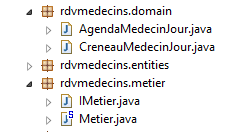 |
- [IMetier] هي واجهة طبقة [business] و[Metier] هي تطبيقها؛
- [DoctorDailySchedule] و [DoctorDailySlot] هما كيانان تجاريان؛
2.7.1. الكيانات
يربط كيان [DoctorTimeSlot] فترة زمنية بأي موعد محجوز ضمن تلك الفترة:
package rdvmedecins.domain;
import java.io.Serializable;
import rdvmedecins.entities.Creneau;
import rdvmedecins.entities.Rv;
public class CreneauMedecinJour implements Serializable {
private static final long serialVersionUID = 1L;
// fields
private Creneau creneau;
private Rv rv;
// manufacturers
public CreneauMedecinJour() {
}
public CreneauMedecinJour(Creneau creneau, Rv rv) {
this.creneau=creneau;
this.rv=rv;
}
// toString
@Override
public String toString() {
return String.format("[%s %s]", creneau, rv);
}
// getters and setters
...
}
- السطر 12: الفترة الزمنية؛
- السطر 13: الموعد، إن وجد – وإلا فسيكون فارغًا؛
الكيان [AgendaMedecinJour] هو جدول مواعيد الطبيب ليوم معين، أي قائمة مواعيده:
package rdvmedecins.domain;
import java.io.Serializable;
import java.text.SimpleDateFormat;
import java.util.Date;
import rdvmedecins.entities.Medecin;
public class AgendaMedecinJour implements Serializable {
private static final long serialVersionUID = 1L;
// fields
private Medecin medecin;
private Date jour;
private CreneauMedecinJour[] creneauxMedecinJour;
// manufacturers
public AgendaMedecinJour() {
}
public AgendaMedecinJour(Medecin medecin, Date jour, CreneauMedecinJour[] creneauxMedecinJour) {
this.medecin = medecin;
this.jour = jour;
this.creneauxMedecinJour = creneauxMedecinJour;
}
public String toString() {
StringBuffer str = new StringBuffer("");
for (CreneauMedecinJour cr : creneauxMedecinJour) {
str.append(" ");
str.append(cr.toString());
}
return String.format("Agenda[%s,%s,%s]", medecin, new SimpleDateFormat("dd/MM/yyyy").format(jour), str.toString());
}
// getters and setters
...
}
- السطر 13: الطبيب؛
- السطر 14: اليوم في التقويم؛
- السطر 15: أوقاتهم المتاحة، سواء كان هناك موعد مسبق أم لا؛
2.7.2. الخدمة
واجهة طبقة [الأعمال] هي كما يلي:
package rdvmedecins.metier;
import java.util.Date;
import java.util.List;
import rdvmedecins.domain.AgendaMedecinJour;
import rdvmedecins.entities.Client;
import rdvmedecins.entities.Creneau;
import rdvmedecins.entities.Medecin;
import rdvmedecins.entities.Rv;
public interface IMetier {
// customer list
public List<Client> getAllClients();
// list of doctors
public List<Medecin> getAllMedecins();
// list of physician slots
public List<Creneau> getAllCreneaux(long idMedecin);
// list of doctor's appointments on a given day
public List<Rv> getRvMedecinJour(long idMedecin, Date jour);
// find a customer identified by its id
public Client getClientById(long id);
// find a customer identified by its id
public Medecin getMedecinById(long id);
// find an Rv identified by its id
public Rv getRvById(long id);
// find a time slot identified by its id
public Creneau getCreneauById(long id);
// add a RV to the list
public Rv ajouterRv(Date jour, Creneau créneau, Client client);
// delete a RV
public void supprimerRv(Rv rv);
// job
public AgendaMedecinJour getAgendaMedecinJour(long idMedecin, Date jour);
}
تشرح التعليقات دور كل طريقة.
تنفيذ واجهة [IMetier] هو فئة [Metier] التالية:
package rdvmedecins.metier;
import java.util.Date;
import java.util.Hashtable;
import java.util.List;
import java.util.Map;
import org.springframework.beans.factory.annotation.Autowired;
import org.springframework.stereotype.Service;
import rdvmedecins.domain.AgendaMedecinJour;
import rdvmedecins.domain.CreneauMedecinJour;
import rdvmedecins.entities.Client;
import rdvmedecins.entities.Creneau;
import rdvmedecins.entities.Medecin;
import rdvmedecins.entities.Rv;
import rdvmedecins.repositories.ClientRepository;
import rdvmedecins.repositories.CreneauRepository;
import rdvmedecins.repositories.MedecinRepository;
import rdvmedecins.repositories.RvRepository;
import com.google.common.collect.Lists;
@Service("métier")
public class Metier implements IMetier {
// repositories
@Autowired
private MedecinRepository medecinRepository;
@Autowired
private ClientRepository clientRepository;
@Autowired
private CreneauRepository creneauRepository;
@Autowired
private RvRepository rvRepository;
// interface implementation
@Override
public List<Client> getAllClients() {
return Lists.newArrayList(clientRepository.findAll());
}
@Override
public List<Medecin> getAllMedecins() {
return Lists.newArrayList(medecinRepository.findAll());
}
@Override
public List<Creneau> getAllCreneaux(long idMedecin) {
return Lists.newArrayList(creneauRepository.getAllCreneaux(idMedecin));
}
@Override
public List<Rv> getRvMedecinJour(long idMedecin, Date jour) {
return Lists.newArrayList(rvRepository.getRvMedecinJour(idMedecin, jour));
}
@Override
public Client getClientById(long id) {
return clientRepository.findOne(id);
}
@Override
public Medecin getMedecinById(long id) {
return medecinRepository.findOne(id);
}
@Override
public Rv getRvById(long id) {
return rvRepository.findOne(id);
}
@Override
public Creneau getCreneauById(long id) {
return creneauRepository.findOne(id);
}
@Override
public Rv ajouterRv(Date jour, Creneau créneau, Client client) {
return rvRepository.save(new Rv(jour, client, créneau));
}
@Override
public void supprimerRv(Rv rv) {
rvRepository.delete(rv.getId());
}
public AgendaMedecinJour getAgendaMedecinJour(long idMedecin, Date jour) {
...
}
}
- السطر 24: التعليق التوضيحي [@Service] هو تعليق توضيحي لـ Spring يجعل الفئة المُعلَّمة مكونًا مُدارًا بواسطة Spring. يمكنك تسمية المكون أو عدم تسميته. هذا المكون يُسمى [business]؛
- السطر 25: تنفذ فئة [Metier] واجهة [IMetier]؛
- السطر 28: التعليق التوضيحي [@Autowired] هو تعليق توضيحي لـ Spring. سيتم تهيئة (حقن) قيمة الحقل المُعلَّم بهذه الطريقة بواسطة Spring مع الإشارة إلى مكون Spring من النوع أو الاسم المحدد. هنا، لا يحدد التعليق التوضيحي [@Autowired] اسمًا. لذلك، سيتم إجراء الحقن القائم على النوع؛
- السطر 29: سيتم تهيئة الحقل [medecinRepository] بالإشارة إلى مكون Spring من النوع [MedecinRepository]. وستكون هذه هي الإشارة إلى الفئة التي أنشأتها Spring Data لتنفيذ واجهة [MedecinRepository] التي عرضناها سابقًا؛
- الأسطر 30-35: تتكرر هذه العملية للواجهات الثلاث الأخرى التي تمت مناقشتها؛
- الأسطر 39-41: تنفيذ طريقة [getAllClients]؛
- السطر 40: نستخدم طريقة [findAll] الخاصة بواجهة [ClientRepository]. تُرجع هذه الطريقة نوع [Iterable<Client>]، الذي نحوله إلى [List<Client>] باستخدام الطريقة الثابتة [Lists.newArrayList]. تم تعريف فئة [Lists] في مكتبة Google Guava. في [pom.xml]، تم استيراد هذه التبعية:
<dependency>
<groupId>com.google.guava</groupId>
<artifactId>guava</artifactId>
<version>16.0.1</version>
</dependency>
- الأسطر 38–86: يتم تنفيذ أساليب واجهة [IMetier] باستخدام فئات من طبقة [DAO]؛
الطريقة الموجودة في السطر 88 هي الوحيدة الخاصة بطبقة [business]. وقد وُضعت هنا لأنها تنفذ منطقًا تجاريًا يتجاوز مجرد الوصول إلى البيانات. وبدون هذه الطريقة، لن يكون هناك سبب لإنشاء طبقة [business]. وفيما يلي طريقة [getAgendaMedecinJour]:
public AgendaMedecinJour getAgendaMedecinJour(long idMedecin, Date jour) {
// list of doctor's time slots
List<Creneau> creneauxHoraires = getAllCreneaux(idMedecin);
// list of bookings for the same doctor on the same day
List<Rv> reservations = getRvMedecinJour(idMedecin, jour);
// a dictionary is created from the Rvs taken
Map<Long, Rv> hReservations = new Hashtable<Long, Rv>();
for (Rv resa : reservations) {
hReservations.put(resa.getCreneau().getId(), resa);
}
// create the agenda for the requested day
AgendaMedecinJour agenda = new AgendaMedecinJour();
// the doctor
agenda.setMedecin(getMedecinById(idMedecin));
// the day
agenda.setJour(jour);
// reservation slots
CreneauMedecinJour[] creneauxMedecinJour = new CreneauMedecinJour[creneauxHoraires.size()];
agenda.setCreneauxMedecinJour(creneauxMedecinJour);
// filling reservation slots
for (int i = 0; i < creneauxHoraires.size(); i++) {
// line i agenda
creneauxMedecinJour[i] = new CreneauMedecinJour();
// time slot
Creneau créneau = creneauxHoraires.get(i);
long idCreneau = créneau.getId();
creneauxMedecinJour[i].setCreneau(créneau);
// is the slot free or reserved?
if (hReservations.containsKey(idCreneau)) {
// the slot is occupied - we note the resa
Rv resa = hReservations.get(idCreneau);
creneauxMedecinJour[i].setRv(resa);
}
}
// we return the result
return agenda;
}
نشجع القراء على قراءة التعليقات. الخوارزمية هي كما يلي:
- استرجاع جميع المواعيد المتاحة للطبيب المحدد؛
- استرجاع جميع مواعيده في اليوم المحدد؛
- باستخدام هذه المعلومات، يمكننا تحديد ما إذا كانت الفترة الزمنية متاحة أم محجوزة؛
2.8. تكوين المشروع
 |
تقوم فئة [DomainAndPersistenceConfig] بتكوين المشروع بأكمله:
package rdvmedecins.config;
import javax.sql.DataSource;
import org.apache.commons.dbcp.BasicDataSource;
import org.springframework.boot.autoconfigure.EnableAutoConfiguration;
import org.springframework.boot.orm.jpa.EntityScan;
import org.springframework.context.annotation.Bean;
import org.springframework.context.annotation.ComponentScan;
import org.springframework.data.jpa.repository.config.EnableJpaRepositories;
import org.springframework.orm.jpa.JpaVendorAdapter;
import org.springframework.orm.jpa.vendor.Database;
import org.springframework.orm.jpa.vendor.HibernateJpaVendorAdapter;
import org.springframework.transaction.annotation.EnableTransactionManagement;
@EnableJpaRepositories(basePackages = { "rdvmedecins.repositories" })
@EnableAutoConfiguration
@ComponentScan(basePackages = { "rdvmedecins" })
@EntityScan(basePackages = { "rdvmedecins.entities" })
@EnableTransactionManagement
public class DomainAndPersistenceConfig {
// the MySQL data source
@Bean
public DataSource dataSource() {
BasicDataSource dataSource = new BasicDataSource();
dataSource.setDriverClassName("com.mysql.jdbc.Driver");
dataSource.setUrl("jdbc:mysql://localhost:3306/dbrdvmedecins");
dataSource.setUsername("root");
dataSource.setPassword("");
return dataSource;
}
// provider JPA - not required if you're happy with the default values used by Spring boot
// here we define it to enable / disable logs SQL
@Bean
public JpaVendorAdapter jpaVendorAdapter() {
HibernateJpaVendorAdapter hibernateJpaVendorAdapter = new HibernateJpaVendorAdapter();
hibernateJpaVendorAdapter.setShowSql(false);
hibernateJpaVendorAdapter.setGenerateDdl(false);
hibernateJpaVendorAdapter.setDatabase(Database.MYSQL);
return hibernateJpaVendorAdapter;
}
// the EntityManagerFactory and TransactionManager are defined with default values by Spring boot
}
- السطر 45: لن نقوم بتعريف حبوب [EntityManagerFactory] و [TransactionManager]. بدلاً من ذلك، سنعتمد على تعليق Spring Boot [@EnableAutoConfiguration] (السطر 17)؛
- الأسطر 24–32: حدد مصدر بيانات MySQL 5. هذا عنصر لا يستطيع Spring Boot عادةً تكوينه تلقائيًا؛
- الأسطر 36–43: نقوم أيضًا بتكوين تطبيق JPA لتعيين سمة [showSql] الخاصة بـ Hibernate على false (السطر 39). بشكل افتراضي، يتم تعيينها على true؛
- في الوقت الحالي، المكونات الوحيدة التي يديرها Spring هي الحبوب في السطرين 25 و 37، بالإضافة إلى حبوب [EntityManagerFactory] و [TransactionManager] عبر التكوين التلقائي. نحتاج إلى إضافة الحبوب من طبقات [business] و [DAO]؛
- يضيف السطر 16 الواجهات من حزمة [rdvmdecins.repositories] التي ترث من واجهة [CrudRepository] إلى سياق Spring؛
- يضيف السطر 18 إلى سياق Spring جميع الفئات في حزمة [rdvmedecins] وفئاتها الفرعية التي تحتوي على تعليق Spring. في حزمة [rdvmdecins.metier]، سيتم العثور على فئة [Metier] مع تعليقها [@Service] وإضافتها إلى سياق Spring؛
- السطر 45: سيتم تعريف حبة [entityManagerFactory] افتراضيًا بواسطة Spring Boot. يجب أن نخبر هذه الحبة بمكان وجود كيانات JPA التي تحتاج إلى إدارتها. يقوم السطر 19 بذلك؛
- السطر 20: يحدد أن طرق الواجهات التي ترث من واجهة [CrudRepository] يجب تنفيذها ضمن معاملة؛
2.9. اختبارات لطبقة [business]
فئة [rdvmedecins.tests.Metier] هي فئة اختبار Spring/JUnit 4:
package rdvmedecins.tests;
import java.text.ParseException;
import java.util.Date;
import java.util.List;
import org.junit.Assert;
import org.junit.Test;
import org.junit.runner.RunWith;
import org.springframework.beans.factory.annotation.Autowired;
import org.springframework.boot.test.SpringApplicationConfiguration;
import org.springframework.test.context.junit4.SpringJUnit4ClassRunner;
import rdvmedecins.config.DomainAndPersistenceConfig;
import rdvmedecins.domain.AgendaMedecinJour;
import rdvmedecins.entities.Client;
import rdvmedecins.entities.Creneau;
import rdvmedecins.entities.Medecin;
import rdvmedecins.entities.Rv;
import rdvmedecins.metier.IMetier;
@SpringApplicationConfiguration(classes = DomainAndPersistenceConfig.class)
@RunWith(SpringJUnit4ClassRunner.class)
public class Metier {
@Autowired
private IMetier métier;
@Test
public void test1(){
// customer display
List<Client> clients = métier.getAllClients();
display("Liste des clients :", clients);
// physician display
List<Medecin> medecins = métier.getAllMedecins();
display("Liste des médecins :", medecins);
// display doctor's slots
Medecin médecin = medecins.get(0);
List<Creneau> creneaux = métier.getAllCreneaux(médecin.getId());
display(String.format("Liste des créneaux du médecin %s", médecin), creneaux);
// list of doctor's appointments on a given day
Date jour = new Date();
display(String.format("Liste des rv du médecin %s, le [%s]", médecin, jour), métier.getRvMedecinJour(médecin.getId(), jour));
// add a RV
Rv rv = null;
Creneau créneau = creneaux.get(2);
Client client = clients.get(0);
System.out.println(String.format("Ajout d'un Rv le [%s] dans le créneau %s pour le client %s", jour, créneau,
client));
rv = métier.ajouterRv(jour, créneau, client);
// check
Rv rv2 = métier.getRvById(rv.getId());
Assert.assertEquals(rv, rv2);
display(String.format("Liste des Rv du médecin %s, le [%s]", médecin, jour), métier.getRvMedecinJour(médecin.getId(), jour));
// add a RV in the same slot on the same day
// must trigger an exception
System.out.println(String.format("Ajout d'un Rv le [%s] dans le créneau %s pour le client %s", jour, créneau,
client));
Boolean erreur = false;
try {
rv = métier.ajouterRv(jour, créneau, client);
System.out.println("Rv ajouté");
} catch (Exception ex) {
Throwable th = ex;
while (th != null) {
System.out.println(ex.getMessage());
th = th.getCause();
}
// we note the error
erreur = true;
}
// check for errors
Assert.assertTrue(erreur);
// RV list
display(String.format("Liste des Rv du médecin %s, le [%s]", médecin, jour), métier.getRvMedecinJour(médecin.getId(), jour));
// calendar display
AgendaMedecinJour agenda = métier.getAgendaMedecinJour(médecin.getId(), jour);
System.out.println(agenda);
Assert.assertEquals(rv, agenda.getCreneauxMedecinJour()[2].getRv());
// delete a RV
System.out.println("Suppression du Rv ajouté");
métier.supprimerRv(rv);
// check
rv2 = métier.getRvById(rv.getId());
Assert.assertNull(rv2);
display(String.format("Liste des Rv du médecin %s, le [%s]", médecin, jour), métier.getRvMedecinJour(médecin.getId(), jour));
}
// utility method - displays items in a collection
private void display(String message, Iterable<?> elements) {
System.out.println(message);
for (Object element : elements) {
System.out.println(element);
}
}
}
- السطر 22: تسمح علامة [@SpringApplicationConfiguration] باستخدام ملف التكوين [DomainAndPersistenceConfig] الذي تمت مناقشته سابقًا. وبالتالي، تستفيد فئة الاختبار من جميع الفاصوليا المحددة في هذا الملف؛
- السطر 23: تتيح العلامة [@RunWith] تكامل Spring مع JUnit: يمكن تنفيذ الفئة كاختبار JUnit. [@RunWith] هي علامة JUnit (السطر 9)، في حين أن فئة [SpringJUnit4ClassRunner] هي فئة Spring (السطر 12)؛
- السطران 26-27: حقن مرجع إلى طبقة [business] في فئة الاختبار؛
- العديد من الاختبارات هي مجرد اختبارات بصرية:
- السطران 32-33: قائمة العملاء؛
- السطران 35-36: قائمة الأطباء؛
- السطران 39-40: قائمة بمواعيد الطبيب؛
- السطر 43: قائمة مواعيد الطبيب؛
- السطر 50: إضافة موعد جديد. تُرجع طريقة [addAppt] الموعد مع معلومات إضافية، وهي معرف المفتاح الأساسي الخاص به؛
- السطر 53: يُستخدم هذا المفتاح الأساسي للبحث عن الموعد في قاعدة البيانات؛
- السطر 54: نتحقق من أن الموعد الذي يتم البحث عنه والموعد الذي تم العثور عليه متطابقان. تذكر أن طريقة [equals] للكيان [Rv] قد أعيد تعريفها: يكون الموعدان متطابقين إذا كان لهما نفس المعرف. هنا، يوضح لنا هذا أن الموعد المضاف قد تم إدراجه بالفعل في قاعدة البيانات؛
- الأسطر 61–73: نحاول إضافة الموعد نفسه للمرة الثانية. يجب أن يرفض نظام إدارة قواعد البيانات (DBMS) ذلك بسبب وجود قيد التفرد:
CREATE TABLE IF NOT EXISTS `rv` (
`ID` bigint(20) NOT NULL AUTO_INCREMENT,
`JOUR` date NOT NULL,
`ID_CLIENT` bigint(20) NOT NULL,
`ID_CRENEAU` bigint(20) NOT NULL,
`VERSION` int(11) NOT NULL DEFAULT '0',
PRIMARY KEY (`ID`),
UNIQUE KEY `UNQ1_RV` (`JOUR`,`ID_CRENEAU`),
KEY `FK_RV_ID_CRENEAU` (`ID_CRENEAU`),
KEY `FK_RV_ID_CLIENT` (`ID_CLIENT`)
) ENGINE=InnoDB DEFAULT CHARSET=utf8 COLLATE=utf8_swedish_ci AUTO_INCREMENT=60 ;
يحدد السطر 8 أعلاه أن المجموعة [DAY, SLOT_ID] يجب أن تكون فريدة، مما يمنع جدولة موعدين في نفس الفترة الزمنية في نفس اليوم.
- السطر 73: نتحقق من حدوث استثناء بالفعل؛
- السطر 77: نسترد تقويم الطبيب الذي أضفنا له موعدًا للتو؛
- السطر 79: نتحقق من أن الموعد المضاف موجود بالفعل في جدوله؛
- السطر 82: حذف الموعد المضاف؛
- السطر 84: نسترجع الموعد المحذوف من قاعدة البيانات؛
- السطر 85: نتحقق من أننا استرجعنا مؤشرًا فارغًا، مما يشير إلى أن الموعد الذي بحثنا عنه غير موجود؛
تم تشغيل الاختبار بنجاح:
 |
2.10. برنامج وحدة التحكم
 |
برنامج وحدة التحكم بسيط. وهو يوضح كيفية استرداد مفتاح خارجي:
package rdvmedecins.boot;
import java.text.SimpleDateFormat;
import java.util.Date;
import org.springframework.boot.SpringApplication;
import org.springframework.context.ConfigurableApplicationContext;
import rdvmedecins.config.DomainAndPersistenceConfig;
import rdvmedecins.entities.Client;
import rdvmedecins.entities.Creneau;
import rdvmedecins.entities.Rv;
import rdvmedecins.metier.IMetier;
public class Boot {
// the boot
public static void main(String[] args) {
// prepare the configuration
SpringApplication app = new SpringApplication(DomainAndPersistenceConfig.class);
app.setLogStartupInfo(false);
// launch it
ConfigurableApplicationContext context = app.run(args);
// business
IMetier métier = context.getBean(IMetier.class);
try {
// add a RV to the list
Date jour = new Date();
System.out.println(String.format("Ajout d'un Rv le [%s] dans le créneau 1 pour le client 1", new SimpleDateFormat("dd/MM/yyyy").format(jour)));
Client client = (Client) new Client().build(1L, 1L);
Creneau créneau = (Creneau) new Creneau().build(1L, 1L);
Rv rv = métier.ajouterRv(jour, créneau, client);
System.out.println(String.format("Rv ajouté = %s", rv));
// check
créneau = métier.getCreneauById(1L);
long idMedecin = créneau.getIdMedecin();
display("Liste des rendez-vous", métier.getRvMedecinJour(idMedecin, jour));
} catch (Exception ex) {
System.out.println("Exception : " + ex.getCause());
}
// closing the Spring context
context.close();
}
// utility method - displays items in a collection
private static <T> void display(String message, Iterable<T> elements) {
System.out.println(message);
for (T element : elements) {
System.out.println(element);
}
}
}
يقوم البرنامج بإضافة موعد ثم يتحقق من أنه قد تمت إضافته.
- السطر 19: ستستخدم فئة [SpringApplication] فئة التكوين [DomainAndPersistenceConfig]؛
- السطر 20: إخفاء سجلات بدء تشغيل التطبيق؛
- السطر 22: يتم تنفيذ فئة [SpringApplication]. وهي تُرجع سياق Spring، أي قائمة الفاصوليا المسجلة؛
- السطر 24: يتم استرداد مرجع إلى الحبة التي تنفذ واجهة [IMetier]. وهذا بالتالي مرجع إلى طبقة [business]؛
- الأسطر 27–31: إضافة موعد جديد لليوم، للعميل رقم 1 في الفتحة رقم 1. تم إنشاء العميل والفتحة من الصفر لإثبات أنه يتم استخدام المعرفات فقط. قمنا بتهيئة الإصدار هنا، ولكن كان بإمكاننا استخدام أي قيمة. لا يتم استخدامه هنا؛
- السطر 34: نريد معرفة الطبيب الذي لديه الفتحة رقم 1. للقيام بذلك، نحتاج إلى الاستعلام عن الفتحة رقم 1 في قاعدة البيانات. نظرًا لأننا في وضع [FetchType.LAZY]، لا يتم إرجاع الطبيب مع الفتحة. ومع ذلك، حرصنا على تضمين حقل [idMedecin] في كيان [Creneau] لاسترداد المفتاح الأساسي للطبيب؛
- السطر 35: نسترد المفتاح الأساسي للطبيب؛
- السطر 36: نعرض قائمة مواعيد الطبيب؛
إخراج وحدة التحكم كما يلي:
2.11. مقدمة إلى Spring MVC
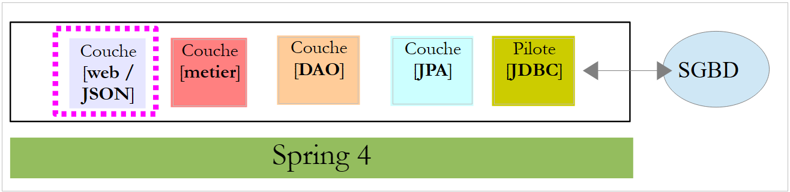 |
سنناقش الآن بناء طبقة الويب. تتكون هذه الطبقة بشكل أساسي من طرق تتعامل مع عناوين URL محددة وترد بسطر نصي بتنسيق JSON (ترميز كائنات JavaScript). طبقة الويب هذه هي واجهة ويب يُشار إليها أحيانًا باسم واجهة برمجة تطبيقات الويب (Web API). سنقوم بتنفيذ هذه الواجهة باستخدام Spring MVC، وهو مكون آخر من مكونات منظومة Spring. سنبدأ بمراجعة أحد الأدلة الموجودة على [http://spring.io].
2.11.1. مشروع العرض التوضيحي
 |
- في [1]، نقوم باستيراد أحد أدلة Spring؛
 |
- في [2]، نختار مثال [Rest Service]؛
- في [3]، نختار مشروع Maven؛
- في [4]، نختار الإصدار النهائي من الدليل؛
- في [5]، نؤكد؛
- في [6]، المشروع المستورد؛
غالبًا ما تُسمى خدمات الويب التي يمكن الوصول إليها عبر عناوين URL قياسية والتي تُرجع نص JSON بخدمات REST (REpresentational State Transfer). في هذا المستند، سأشير ببساطة إلى الخدمة التي سنقوم ببنائها على أنها خدمة ويب/JSON. يُقال إن الخدمة تتبع نمط RESTful إذا كانت تتبع قواعد معينة. لم أحاول الالتزام بهذه القواعد.
دعونا الآن نفحص المشروع المستورد، بدءًا من تكوين Maven الخاص به.
2.11.2. تكوين Maven
ملف [pom.xml] هو كما يلي:
<?xml version="1.0" encoding="UTF-8"?>
<project xmlns="http://maven.apache.org/POM/4.0.0" xmlns:xsi="http://www.w3.org/2001/XMLSchema-instance"
xsi:schemaLocation="http://maven.apache.org/POM/4.0.0 http://maven.apache.org/xsd/maven-4.0.0.xsd">
<modelVersion>4.0.0</modelVersion>
<groupId>org.springframework</groupId>
<artifactId>gs-rest-service</artifactId>
<version>0.1.0</version>
<parent>
<groupId>org.springframework.boot</groupId>
<artifactId>spring-boot-starter-parent</artifactId>
<version>1.1.0.RELEASE</version>
</parent>
<dependencies>
<dependency>
<groupId>org.springframework.boot</groupId>
<artifactId>spring-boot-starter-web</artifactId>
</dependency>
<dependency>
<groupId>com.fasterxml.jackson.core</groupId>
<artifactId>jackson-databind</artifactId>
</dependency>
</dependencies>
<properties>
<start-class>hello.Application</start-class>
</properties>
<build>
<plugins>
<plugin>
<artifactId>maven-compiler-plugin</artifactId>
</plugin>
<plugin>
<groupId>org.springframework.boot</groupId>
<artifactId>spring-boot-maven-plugin</artifactId>
</plugin>
</plugins>
</build>
<repositories>
<repository>
<id>spring-releases</id>
<url>http://repo.spring.io/release</url>
</repository>
</repositories>
<pluginRepositories>
<pluginRepository>
<id>spring-releases</id>
<url>http://repo.spring.io/release</url>
</pluginRepository>
</pluginRepositories>
</project>
- الأسطر 10–14: كما هو الحال في مشروع [Spring Data]، يوجد المشروع الأصلي [Spring Boot]؛
- الأسطر 17–20: تتضمن أداة [spring-boot-starter-web] المكتبات المطلوبة لمشروع Spring MVC. وعلى وجه الخصوص، تتضمن خادم Tomcat مدمجًا. سيتم تشغيل التطبيق على هذا الخادم؛
- الأسطر 21–24: تتعامل مكتبة Jackson مع JSON: تحويل كائن Java إلى سلسلة JSON والعكس؛
يتضمن هذا التكوين عددًا كبيرًا من المكتبات:
 |  |
في الأعلى، نرى الأرشيفات الثلاثة لخادم Tomcat.
2.11.3. بنية خدمة Spring REST
تنفذ Spring MVC نمط الهندسة المعمارية MVC (النموذج – العرض – وحدة التحكم) على النحو التالي:
 |
تتم معالجة طلب العميل على النحو التالي:
- الطلب - تكون عناوين URL المطلوبة على النحو التالي: http://machine:port/contexte/Action/param1/param2/....?p1=v1&p2=v2&... [Dispatcher Servlet] هي فئة Spring التي تتعامل مع عناوين URL الواردة. وهي "توجه" عنوان URL إلى الإجراء الذي يجب أن يتعامل معه. هذه الإجراءات هي طرق لفئات محددة تسمى [Controllers]. الحرف C في MVC هنا هو السلسلة [Dispatcher Servlet، Controller، Action]. إذا لم يتم تكوين أي إجراء لمعالجة عنوان URL الوارد، فسيرد [Dispatcher Servlet] بأن عنوان URL المطلوب لم يتم العثور عليه (خطأ 404 NOT FOUND)؛
- معالجة
- يمكن للإجراء المحدد استخدام المعلمات التي مررها [Dispatcher Servlet] إليه. يمكن أن تأتي هذه المعلمات من عدة مصادر:
- مسار [/param1/param2/...] لعنوان URL،
- معلمات عنوان URL [p1=v1&p2=v2]،
- من المعلمات التي أرسلها المتصفح مع طلبه؛
- عند معالجة طلب المستخدم، قد يحتاج الإجراء إلى طبقة [الأعمال] [2b]. بمجرد معالجة طلب العميل، قد يؤدي ذلك إلى استجابات متنوعة. ومن الأمثلة الكلاسيكية على ذلك:
- صفحة خطأ إذا تعذر معالجة الطلب بشكل صحيح
- صفحة تأكيد في الحالات الأخرى
- يأمر الإجراء بعرض طريقة عرض محددة [3]. ستعرض طريقة العرض هذه البيانات المعروفة باسم نموذج العرض. هذا هو الحرف M في MVC. سيقوم الإجراء بإنشاء نموذج M هذا [2c] ويأمر بعرض طريقة عرض V [3]؛
- الاستجابة - تستخدم طريقة العرض V المحددة النموذج M الذي أنشأته الإجراء لتهيئة الأجزاء الديناميكية من استجابة HTML التي يجب إرسالها إلى العميل، ثم ترسل هذه الاستجابة.
بالنسبة لخدمة الويب / JSON، يتم تعديل البنية السابقة بشكل طفيف:
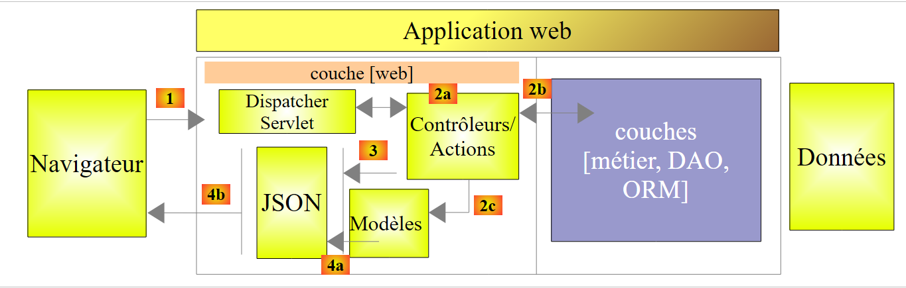 |
- في [4a]، يتم تحويل النموذج، وهو فئة Java، إلى سلسلة JSON بواسطة مكتبة JSON؛
- في [4b]، يتم إرسال سلسلة JSON هذه إلى المتصفح؛
2.11.4. وحدة التحكم C
 |
يحتوي التطبيق المستورد على وحدة التحكم التالية:
package hello;
import java.util.concurrent.atomic.AtomicLong;
import org.springframework.stereotype.Controller;
import org.springframework.web.bind.annotation.RequestMapping;
import org.springframework.web.bind.annotation.RequestParam;
import org.springframework.web.bind.annotation.ResponseBody;
@Controller
public class GreetingController {
private static final String template = "Hello, %s!";
private final AtomicLong counter = new AtomicLong();
@RequestMapping("/greeting")
public @ResponseBody
Greeting greeting(@RequestParam(value = "name", required = false, defaultValue = "World") String name) {
return new Greeting(counter.incrementAndGet(), String.format(template, name));
}
}
- السطر 9: تجعل العلامة [@Controller] فئة [GreetingController] وحدة تحكم Spring، مما يعني أن طرقها مسجلة لمعالجة عناوين URL؛
- السطر 15: تحدد العلامة [@RequestMapping] عنوان URL الذي تعالجه الطريقة، وهو في هذه الحالة عنوان URL [/greeting]. سنرى لاحقًا أنه يمكن تعيين معلمات لهذا العنوان URL وأنه من الممكن استرداد هذه المعلمات؛
- السطر 16: تشير العلامة [@ResponseBody] إلى أن الأسلوب لا يولد قالبًا لعرض (JSP، JSF، Thymeleaf، إلخ) ليتم إرساله إلى متصفح العميل، بل يولد الاستجابة للمتصفح نفسه. هنا، تنتج كائنًا من النوع [Greeting] (السطر 18). على الرغم من أن هذا غير واضح على الفور هنا، إلا أن هذا الكائن سيتم تحويله أولاً إلى JSON قبل إرساله إلى المتصفح. إن وجود مكتبة JSON في تبعيات المشروع هو ما يجعل Spring Boot يقوم تلقائيًا بتكوين المشروع بهذه الطريقة؛
- السطر 17: تحتوي طريقة [greeting] على معلمة [String name]. تشير التعليقة التوضيحية [@RequestParam(value = "name", required = false, defaultValue = "World"] إلى أنه يجب تهيئة هذه المعلمة بمعلمة باسم [name] (@RequestParam(value = "name"). يمكن أن تكون هذه المعلمة من نوع GET أو POST. هذه المعلمة غير مطلوبة (required = false). في هذه الحالة، سيتم تهيئة المعلمة [name] الخاصة بالطريقة بالقيمة [World] (defaultValue = "World").
2.11.5. نموذج M
نموذج M الناتج عن الطريقة السابقة هو كائن [Greeting] التالي:
 |
package hello;
public class Greeting {
private final long id;
private final String content;
public Greeting(long id, String content) {
this.id = id;
this.content = content;
}
public long getId() {
return id;
}
public String getContent() {
return content;
}
}
سيؤدي تحويل JSON لهذا الكائن إلى إنشاء السلسلة {"id":n,"content":"text"}. وفي النهاية، ستكون سلسلة JSON الناتجة عن طريقة وحدة التحكم بالشكل التالي:
أو
2.11.6. تكوين المشروع
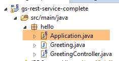 |
يتم تكوين المشروع بواسطة فئة [Application] التالية:
package hello;
import org.springframework.boot.autoconfigure.EnableAutoConfiguration;
import org.springframework.boot.SpringApplication;
import org.springframework.context.annotation.ComponentScan;
@ComponentScan
@EnableAutoConfiguration
public class Application {
public static void main(String[] args) {
SpringApplication.run(Application.class, args);
}
}
- السطر 11: من المثير للاهتمام أن هذه الفئة قابلة للتنفيذ باستخدام طريقة [main] الخاصة بتطبيقات وحدة التحكم. وهذا هو الحال بالفعل. ستقوم فئة [SpringApplication] في السطر 12 بتشغيل خادم Tomcat الموجود في التبعيات ونشر خدمة REST عليه؛
- السطر 4: يمكننا أن نرى أن فئة [SpringApplication] تنتمي إلى مشروع [Spring Boot]؛
- السطر 12: المعلمة الأولى هي الفئة التي تهيئ المشروع، والثانية تحتوي على أي معلمات إضافية؛
- السطر 8: تعليمة [@EnableAutoConfiguration] توجه Spring Boot لتكوين المشروع؛
- السطر 7: تؤدي العلامة [@ComponentScan] إلى فحص الدليل الذي يحتوي على فئة [Application] بحثًا عن مكونات Spring. سيتم العثور على مكون واحد: فئة [GreetingController]، التي تحتوي على العلامة [@Controller]، مما يجعلها مكونًا من مكونات Spring؛
2.11.7. تشغيل المشروع
دعونا نقوم بتشغيل المشروع:
 |
نحصل على سجلات وحدة التحكم التالية:
____ _ __ _ _
- السطر 12: يبدأ خادم Tomcat على المنفذ 8080 (السطر 11)؛
- السطر 16: وجود سيرفلت [DispatcherServlet]؛
- السطر 19: تم اكتشاف الطريقة [GreetingController.greeting]؛
لاختبار تطبيق الويب، نطلب عنوان URL [http://localhost:8080/greeting]:
 | 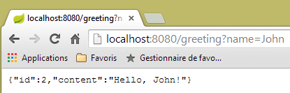 |
نتلقى سلسلة JSON المتوقعة. قد يكون من المثير للاهتمام عرض رؤوس HTTP المرسلة من الخادم. للقيام بذلك، سنستخدم المكون الإضافي لمتصفح Chrome المسمى [Advanced Rest Client] (انظر الملاحق):
 |
- في [1]، عنوان URL المطلوب؛
- في [2]، يتم استخدام طريقة GET؛
- في [3]، استجابة JSON؛
- في [4]، أشار الخادم إلى أنه يرسل استجابة بتنسيق JSON؛
- في [5]، نطلب نفس عنوان URL ولكن هذه المرة باستخدام طلب POST؛
- في [7]، يتم إرسال المعلومات إلى الخادم بتنسيق [urlencoded]؛
- في [6]، المعلمة name مع قيمتها؛
- في [8]، يُخبر المتصفح الخادم بأنه يرسل معلومات [urlencoded]؛
- في [9]، رد JSON من الخادم؛
2.11.8. إنشاء أرشيف قابل للتنفيذ
من الممكن إنشاء أرشيف قابل للتنفيذ خارج Eclipse. التكوين اللازم موجود في ملف [pom.xml]:
<properties>
<project.build.sourceEncoding>UTF-8</project.build.sourceEncoding>
<start-class>istia.st.Application</start-class>
<java.version>1.7</java.version>
</properties>
<build>
<plugins>
<plugin>
<groupId>org.springframework.boot</groupId>
<artifactId>spring-boot-maven-plugin</artifactId>
</plugin>
</plugins>
</build>
- تحدد الأسطر 9–12 المكون الإضافي الذي سيقوم بإنشاء الأرشيف القابل للتنفيذ؛
- السطر 3 يحدد فئة الملف القابل للتنفيذ للمشروع؛
إليك كيفية المتابعة:
 |
- في [1]: تنفيذ هدف Maven؛
- في [2]: هناك هدفان: [clean] لحذف مجلد [target] من مشروع Maven، و[package] لإعادة إنشائه؛
- في [3]: سيكون المجلد [target] الذي تم إنشاؤه موجودًا في هذا المجلد؛
- في [4]: تم إنشاء الهدف؛
في السجلات التي تظهر في وحدة التحكم، من المهم رؤية المكون الإضافي [spring-boot-maven-plugin]. هذا هو المكون الإضافي الذي يقوم بإنشاء الأرشيف القابل للتنفيذ.
باستخدام وحدة التحكم، انتقل إلى المجلد الذي تم إنشاؤه:
- السطر 5: الأرشيف الذي تم إنشاؤه؛
يتم تنفيذ هذا الأرشيف على النحو التالي:
الآن بعد أن أصبح تطبيق الويب قيد التشغيل، يمكنك الوصول إليه باستخدام متصفح:
 |
2.11.9. نشر التطبيق على خادم Tomcat
على الرغم من أن Spring Boot مريح للغاية في وضع التطوير، فمن المرجح أن يتم نشر التطبيق النهائي على خادم Tomcat حقيقي. وإليك كيفية القيام بذلك:
قم بتعديل ملف [pom.xml] على النحو التالي:
<?xml version="1.0" encoding="UTF-8"?>
<project xmlns="http://maven.apache.org/POM/4.0.0" xmlns:xsi="http://www.w3.org/2001/XMLSchema-instance"
xsi:schemaLocation="http://maven.apache.org/POM/4.0.0 http://maven.apache.org/xsd/maven-4.0.0.xsd">
<modelVersion>4.0.0</modelVersion>
<groupId>org.springframework</groupId>
<artifactId>gs-rest-service</artifactId>
<version>0.1.0</version>
<packaging>war</packaging>
<parent>
<groupId>org.springframework.boot</groupId>
<artifactId>spring-boot-starter-parent</artifactId>
<version>1.1.0.RELEASE</version>
</parent>
<dependencies>
<dependency>
<groupId>org.springframework.boot</groupId>
<artifactId>spring-boot-starter-web</artifactId>
</dependency>
<dependency>
<groupId>com.fasterxml.jackson.core</groupId>
<artifactId>jackson-databind</artifactId>
</dependency>
<dependency>
<groupId>org.springframework.boot</groupId>
<artifactId>spring-boot-starter-tomcat</artifactId>
<scope>provided</scope>
</dependency>
</dependencies>
<properties>
<start-class>hello.Application</start-class>
</properties>
....
</project>
يجب إجراء التغييرات في مكانين:
- السطر 9: يجب تحديد أنك ستقوم بإنشاء ملف WAR (أرشيف الويب)؛
- الأسطر 26–30: تحتاج إلى إضافة تبعية إلى عنصر [spring-boot-starter-tomcat]. يضيف هذا العنصر جميع فئات Tomcat إلى تبعيات المشروع؛
- السطر 29: هذه المكونة [متوفرة]، مما يعني أن الأرشيفات المقابلة لن يتم تضمينها في ملف WAR الذي تم إنشاؤه. بدلاً من ذلك، ستكون هذه الأرشيفات موجودة على خادم Tomcat حيث سيتم تشغيل التطبيق؛
يجب عليك أيضًا تكوين تطبيق الويب. في حالة عدم وجود ملف [web.xml]، يتم ذلك باستخدام فئة تمتد من [SpringBootServletInitializer]:
 |
فيما يلي فئة [ApplicationInitializer]:
package hello;
import org.springframework.boot.builder.SpringApplicationBuilder;
import org.springframework.boot.context.web.SpringBootServletInitializer;
public class ApplicationInitializer extends SpringBootServletInitializer {
@Override
protected SpringApplicationBuilder configure(SpringApplicationBuilder application) {
return application.sources(Application.class);
}
}
- السطر 6: فئة [ApplicationInitializer] تمتد من فئة [SpringBootServletInitializer]؛
- السطر 9: يتم تجاوز طريقة [configure] (السطر 8)؛
- السطر 10: يتم توفير الفئة التي تقوم بتكوين المشروع؛
لتشغيل المشروع، اتبع الخطوات التالية:
 |
- في [1]، قم بتشغيل المشروع على أحد الخوادم المسجلة في بيئة تطوير Eclipse؛
- في [2]، حدد [tc Server Developer]، وهو الخيار الافتراضي. هذا هو أحد أشكال Tomcat؛
بمجرد الانتهاء من ذلك، يمكنك إدخال عنوان URL [http://localhost:8080/gs-rest-service/greeting/?name=Mitchell] في المتصفح:
 |
نحن نعرف الآن كيفية إنشاء أرشيف WAR. وسنواصل العمل مع Spring Boot وأرشيف JAR القابل للتنفيذ الخاص به.
2.11.10. إنشاء مشروع ويب جديد
لإنشاء مشروع ويب جديد، اتبع الخطوات التالية:
 |
- في [1]: ملف / جديد / مشروع Spring Starter
- في [2]: حدد [Web]. لا تحدد أي مكتبات عرض لأن خدمة الويب / JSON لا تحتوي على عروض؛
- سيكون المشروع الذي تم إنشاؤه مشروع Maven. في [3]، أدخل اسم المجموعة لكتلة Maven المراد إنشاؤها؛ في [4]، أدخل اسم الكتلة؛
- في [5]، أدخل اسم الحزمة التي سيضع فيها Spring فئة تكوين المشروع؛
- في [6]، قم بتسمية مشروع Eclipse — قد يختلف الاسم عن [4]؛
 |
2.12. طبقة [الويب]
 |
 |
سنقوم ببناء طبقة الويب على عدة خطوات:
- الخطوة 1: طبقة ويب وظيفية بدون مصادقة؛
- الخطوة 2: تنفيذ المصادقة باستخدام Spring Security؛
- الخطوة 3: تنفيذ CORS [مشاركة الموارد عبر الأصول (CORS) هي آلية تسمح بطلب العديد من الموارد (مثل الخطوط وJavaScript وغيرها) الموجودة على صفحة ويب من نطاق آخر خارج النطاق الذي نشأت منه الموارد. (ويكيبيديا)]. سيكون عميل خدمة الويب لدينا عميل ويب Angular لا ينتمي بالضرورة إلى نفس المجال الذي تنتمي إليه خدمة الويب لدينا. بشكل افتراضي، لا يمكنه الوصول إلى خدمة الويب ما لم تصرح له خدمة الويب بذلك. سنرى كيف؛
2.12.1. تكوين Maven
فيما يلي ملف [pom.xml] الخاص بالمشروع:
<modelVersion>4.0.0</modelVersion>
<groupId>istia.st.spring4.mvc</groupId>
<artifactId>rdvmedecins-webapi-v1</artifactId>
<version>0.0.1-SNAPSHOT</version>
<name>rdvmedecins-webapi-v1</name>
<description>Gestion de RV Médecins</description>
<parent>
<groupId>org.springframework.boot</groupId>
<artifactId>spring-boot-starter-parent</artifactId>
<version>1.0.0.RELEASE</version>
</parent>
<dependencies>
<dependency>
<groupId>org.springframework.boot</groupId>
<artifactId>spring-boot-starter-web</artifactId>
</dependency>
<dependency>
<groupId>istia.st.spring4.rdvmedecins</groupId>
<artifactId>rdvmedecins-metier-dao</artifactId>
<version>0.0.1-SNAPSHOT</version>
</dependency>
</dependencies>
- الأسطر 7–11: مشروع Maven الأصلي؛
- الأسطر 13–16: التبعيات لمشروع Spring MVC؛
- الأسطر 17–21: التبعيات على طبقات [منطق الأعمال، DAO، JPA]؛
2.12.2. واجهة خدمة الويب
 |
- في [1] أعلاه، لا يمكن للمتصفح طلب سوى عدد محدود من عناوين URL ذات صيغة محددة؛
- في [4]، يتلقى استجابة JSON؛
ستكون جميع الاستجابات الواردة من خدمة الويب الخاصة بنا بنفس التنسيق، بما يتوافق مع تمثيل JSON لكائن من النوع [Response] على النحو التالي:
package rdvmedecins.web.models;
public class Reponse {
// ----------------- properties
// operation status
private int status;
// the answer JSON
private Object data;
// ---------------constructeurs
public Reponse() {
}
public Reponse(int status, Object data) {
this.status = status;
this.data = data;
}
// methods
public void incrStatusBy(int increment) {
status += increment;
}
// ----------------------getters and setters
...
}
- السطر 7: رمز خطأ الاستجابة 0: OK، أي شيء آخر: KO؛
- السطر 9: نص الاستجابة؛
نقدم الآن لقطات الشاشة التي توضح واجهة خدمة الويب / JSON:
قائمة بجميع المرضى في العيادة الطبية [/getAllClients]
 |
قائمة بجميع الأطباء في العيادة [/getAllMedecins]
 |
قائمة المواعيد المتاحة للطبيب [/getAllCreneaux/{idMedecin}]
 |
قائمة مواعيد الطبيب [/getRvMedecinJour/{idMedecin}/{yyyy-mm-dd}
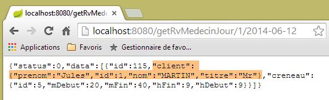 |
جدول أعمال الطبيب اليومي [/getAgendaMedecinJour/{idMedecin}/{yyyy-mm-dd}]
 |
لإضافة أو حذف موعد، نستخدم ملحق Chrome [Advanced Rest Client] لأن هذه العمليات تتم باستخدام طلب POST.
 |
- في [0]، عنوان URL لخدمة الويب؛
- في [1]، يتم استخدام طريقة POST؛
- في [2]، نص JSON للمعلومات المرسلة إلى خدمة الويب في النموذج {day, clientId, slotId}؛
- في [3]، يحدد العميل لخدمة الويب أنه يرسل المعلومات بتنسيق JSON؛
ثم يكون الرد كما يلي:
 |
- في [4]: يرسل العميل الرأس مشيرًا إلى أن البيانات التي يرسلها بتنسيق JSON؛
- في [5]: ترد خدمة الويب بأنها ترسل JSON أيضًا؛
- في [6]: استجابة خدمة الويب بتنسيق JSON. يحتوي حقل [data] على تمثيل JSON للموعد المضاف؛
يمكن التحقق من وجود الموعد الجديد:
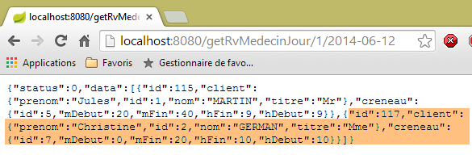 |
حذف موعد [/deleteApp]
 |
- في [1]، عنوان URL لخدمة الويب؛
- في [2]، يتم استخدام طريقة POST؛
- في [3]، نص JSON للمعلومات المرسلة إلى خدمة الويب في النموذج {idRv}؛
- في [4]، يحدد العميل لخدمة الويب أنه يرسل بيانات JSON؛
ثم يكون الرد كما يلي:
 |
- في [5]: يتم تعيين حقل [status] إلى 0، مما يشير إلى نجاح العملية؛
يمكن التحقق من حذف الموعد:
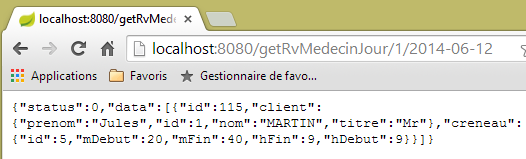 |
كما هو موضح أعلاه، لم يعد موعد المريضة [السيدة جيرمان] مدرجًا في القائمة.
تتيح لك الخدمة الإلكترونية أيضًا استرداد الكيانات باستخدام معرّفاتها:
 |
 |
 |
 |
تتم معالجة جميع عناوين URL هذه بواسطة وحدة التحكم [RdvMedecinsController]، والتي سنقدمها الآن.
2.12.3. الهيكل الأساسي لوحدة التحكم [ RdvMedecinsController]
 |
فيما يلي وحدة التحكم [RdvMedecinsController]:
package rdvmedecins.web.controllers;
import java.text.ParseException;
...
@RestController
public class RdvMedecinsController {
@Autowired
private ApplicationModel application;
private List<String> messages;
@PostConstruct
public void init() {
// application error messages
messages = application.getMessages();
}
// list of doctors
@RequestMapping(value = "/getAllMedecins", method = RequestMethod.GET)
public Reponse getAllMedecins() {
...
}
// customer list
@RequestMapping(value = "/getAllClients", method = RequestMethod.GET)
public Reponse getAllClients() {
...
}
// list of physician slots
@RequestMapping(value = "/getAllCreneaux/{idMedecin}", method = RequestMethod.GET)
public Reponse getAllCreneaux(@PathVariable("idMedecin") long idMedecin) {
...
}
// list of doctor's appointments
@RequestMapping(value = "/getRvMedecinJour/{idMedecin}/{jour}", method = RequestMethod.GET)
public Reponse getRvMedecinJour(@PathVariable("idMedecin") long idMedecin,
@PathVariable("jour") String jour) {
...
}
@RequestMapping(value = "/getClientById/{id}", method = RequestMethod.GET)
public Reponse getClientById(@PathVariable("id") long id) {
...
}
@RequestMapping(value = "/getMedecinById/{id}", method = RequestMethod.GET)
public Reponse getMedecinById(@PathVariable("id") long id) {
...
}
@RequestMapping(value = "/getRvById/{id}", method = RequestMethod.GET)
public Reponse getRvById(@PathVariable("id") long id) {
...
}
@RequestMapping(value = "/getCreneauById/{id}", method = RequestMethod.GET)
public Reponse getCreneauById(@PathVariable("id") long id) {
...
}
@RequestMapping(value = "/ajouterRv", method = RequestMethod.POST, consumes = "application/json; charset=UTF-8")
public Reponse ajouterRv(@RequestBody PostAjouterRv post) {
...
}
@RequestMapping(value = "/supprimerRv", method = RequestMethod.POST, consumes = "application/json; charset=UTF-8")
public Reponse supprimerRv(@RequestBody PostSupprimerRv post) {
...
}
@RequestMapping(value = "/getAgendaMedecinJour/{idMedecin}/{jour}", method = RequestMethod.GET)
public Reponse getAgendaMedecinJour(
@PathVariable("idMedecin") long idMedecin,
@PathVariable("jour") String jour) {
...
}
}
- السطر 6: تجعل العلامة [@RestController] فئة [RdvMedecinsController] وحدة تحكم Spring. بالإضافة إلى ذلك، تضمن أن الطرق التي تتعامل مع عناوين URL ستولد استجابة يتم تحويلها تلقائيًا إلى JSON؛
- السطران 9-10: سيتم حقن كائن من النوع [ApplicationModel] هنا بواسطة Spring؛
- السطر 13: تحدد العلامة [@PostConstruct] طريقة ليتم تنفيذها فور إنشاء مثيل للفئة. وعند تشغيل هذه الطريقة، تكون الكائنات التي تم إدخالها بواسطة Spring متاحة؛
- تُرجع جميع الطرق كائنًا من النوع [Response] على النحو التالي:
package rdvmedecins.web.models;
public class Reponse {
// ----------------- properties
// operation status
private int status;
// the answer
private Object data;
...
}
يتم تسلسل هذا الكائن إلى JSON قبل إرساله إلى متصفح العميل؛
- السطر 20: تحدد العلامة [@RequestMapping] شروط استدعاء الطريقة. هنا، تعالج الطريقة طلب GET من عنوان URL [/getAllMedecins]. إذا تم طلب عنوان URL هذا عبر POST، فسيتم رفضه وسيقوم Spring MVC بإرسال رمز خطأ HTTP إلى عميل الويب؛
- السطر 32: يتم تكوين عنوان URL باستخدام {idMedecin}. يتم استرداد هذه المعلمة باستخدام تعليق [@PathVariable] في السطر 33؛
- السطر 33: المعلمة الوحيدة [long idMedecin] تستقبل قيمتها من المعلمة {idMedecin} في عنوان URL [@PathVariable("idMedecin")]. قد يكون للمعلمة في عنوان URL والمعلمة في الطريقة أسماء مختلفة. لاحظ أن [@PathVariable("idMedecin")] من النوع String (عنوان URL بأكمله هو String)، في حين أن المعلمة [long idMedecin] من النوع [long]. يتم إجراء تحويل النوع تلقائيًا. يتم إرجاع رمز خطأ HTTP إذا فشل تحويل النوع هذا؛
- السطر 65: تشير العلامة [@RequestBody] إلى نص الطلب. في طلب GET، لا يوجد نص أبدًا تقريبًا (ولكن من الممكن تضمينه). في طلب POST، يوجد نص عادةً (ولكن من الممكن حذفه). بالنسبة لعنوان URL [ajouterRv]، يرسل عميل الويب سلسلة JSON التالية في طلب POST الخاص به:
ستؤدي صيغة [@RequestBody PostAjouterRv post] (السطر 65)، إلى جانب حقيقة أن الطريقة تتوقع JSON [consumes = "application/json; charset=UTF-8"] (السطر 64)، إلى تحويل سلسلة JSON المرسلة من عميل الويب إلى كائن من النوع [PostAjouter]. يتم تعريف هذا الكائن على النحو التالي:
package rdvmedecins.web.models;
public class PostAjouterRv {
// pOST DATA
private String jour;
private long idClient;
private long idCreneau;
// getters and setters
...
}
هنا أيضًا، ستحدث تحويلات الأنواع الضرورية تلقائيًا؛
- تحتوي السطور 69-70 على آلية مماثلة لعنوان URL [/deleteRv]. سلسلة JSON المرسلة هي كما يلي:
ونوع [PostSupprimerRv] هو كما يلي:
package rdvmedecins.web.models;
public class PostSupprimerRv {
// pOST DATA
private long idRv;
// getters and setters
...
}
2.12.4. نماذج خدمات الويب
 |
لقد قدمنا بالفعل نماذج [Response، PostAddAppointment، PostDeleteAppointment]. أما نموذج [ApplicationModel] فهو كما يلي:
package rdvmedecins.web.models;
import java.util.Date;
...
@Component
public class ApplicationModel implements IMetier {
// the [business] layer
@Autowired
private IMetier métier;
// data from the [business] layer
private List<Medecin> médecins;
private List<Client> clients;
// error messages
private List<String> messages;
@PostConstruct
public void init() {
// we get the doctors and the customers
try {
médecins = métier.getAllMedecins();
clients = métier.getAllClients();
} catch (Exception ex) {
messages = Static.getErreursForException(ex);
}
}
// getter
public List<String> getMessages() {
return messages;
}
// ------------------------- [business] layer interface
@Override
public List<Client> getAllClients() {
return clients;
}
@Override
public List<Medecin> getAllMedecins() {
return médecins;
}
@Override
public List<Creneau> getAllCreneaux(long idMedecin) {
return métier.getAllCreneaux(idMedecin);
}
@Override
public List<Rv> getRvMedecinJour(long idMedecin, Date jour) {
return métier.getRvMedecinJour(idMedecin, jour);
}
@Override
public Client getClientById(long id) {
return métier.getClientById(id);
}
@Override
public Medecin getMedecinById(long id) {
return métier.getMedecinById(id);
}
@Override
public Rv getRvById(long id) {
return métier.getRvById(id);
}
@Override
public Creneau getCreneauById(long id) {
return métier.getCreneauById(id);
}
@Override
public Rv ajouterRv(Date jour, Creneau creneau, Client client) {
return métier.ajouterRv(jour, creneau, client);
}
@Override
public void supprimerRv(Rv rv) {
métier.supprimerRv(rv);
}
@Override
public AgendaMedecinJour getAgendaMedecinJour(long idMedecin, Date jour) {
return métier.getAgendaMedecinJour(idMedecin, jour);
}
}
- السطر 6: تجعل العلامة [@Component] فئة [ApplicationModel] مكونًا في Spring. مثل جميع مكونات Spring التي رأيناها حتى الآن (باستثناء @Controller)، سيتم إنشاء مثيل واحد فقط من هذا النوع (singleton)؛
- السطر 7: تنفذ فئة [ApplicationModel] واجهة [IMetier]؛
- السطران 10-11: يتم إدخال مرجع إلى طبقة [business] بواسطة Spring؛
- السطر 19: تضمن علامة [@PostConstruct] أن يتم تنفيذ طريقة [init] فور إنشاء مثيل لفئة [ApplicationModel]؛
- السطران 23-24: يتم استرداد قوائم الأطباء والعملاء من طبقة [business]؛
- السطر 26: في حالة حدوث استثناء، نقوم بتخزين الرسائل من مكدس الاستثناءات في الحقل الموجود في السطر 17؛
ستخدم فئة [ApplicationModel] لغرضين:
- كذاكرة تخزين مؤقتة لتخزين قوائم الأطباء والمرضى (العملاء)؛
- كواجهة واحدة لوحدات التحكم؛
تتطور بنية طبقة الويب على النحو التالي:
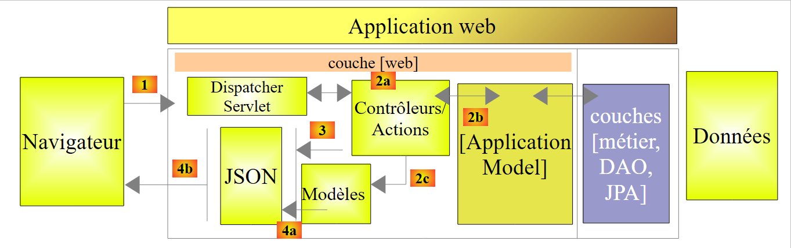 |
- في [2b]، تتواصل أساليب وحدة (وحدات) التحكم مع العنصر الفريد [ApplicationModel]؛
توفر هذه الاستراتيجية مرونة في إدارة ذاكرة التخزين المؤقت. حاليًا، لا يتم تخزين فترات مواعيد الأطباء في ذاكرة التخزين المؤقت. لتخزينها، ما عليك سوى تعديل فئة [ApplicationModel]. لا يؤثر هذا على وحدة التحكم، التي ستستمر في استخدام طريقة [List<Creneau> getAllCreneaux(long idMedecin)] كما كانت تفعل من قبل. ما سيتغير هو تنفيذ هذه الطريقة في [ApplicationModel].
2.12.5. الفئة الثابتة
تحتوي فئة [Static] على مجموعة من طرق المساعدة الثابتة التي لا تحتوي على جوانب "أعمال" أو "ويب":
 |
وفيما يلي شفرة البرنامج:
package rdvmedecins.web.helpers;
import java.text.SimpleDateFormat;
...
public class Static {
public Static() {
}
// list of exception error messages
public static List<String> getErreursForException(Exception exception) {
// retrieve the list of exception error messages
Throwable cause = exception;
List<String> erreurs = new ArrayList<String>();
while (cause != null) {
erreurs.add(cause.getMessage());
cause = cause.getCause();
}
return erreurs;
}
// mappers Object --> Map
// --------------------------------------------------------
....
}
- السطر 12: طريقة [Static.getErrorsForException] التي تم استخدامها (السطر 8 أدناه) في طريقة [init] لفئة [ApplicationModel]:
@PostConstruct
public void init() {
// we get the doctors and the customers
try {
médecins = métier.getAllMedecins();
clients = métier.getAllClients();
} catch (Exception ex) {
messages = Static.getErreursForException(ex);
}
}
تقوم هذه الطريقة بإنشاء كائن [List<String>] يحتوي على رسائل الخطأ [exception.getMessage()] الخاصة باستثناء [exception] واستثناءاته الداخلية [exception.getCause()].
تحتوي فئة [Static] على طرق مساعدة أخرى سنعود إليها عندما نواجهها.
سنقوم الآن بتفصيل معالجة عناوين URL لخدمة الويب. تشارك ثلاث فئات رئيسية في هذه العملية:
- وحدة التحكم [RdvMedecinsController]؛
- فئة طرق المساعدة [Static]؛
- فئة ذاكرة التخزين المؤقت [ApplicationModel]؛
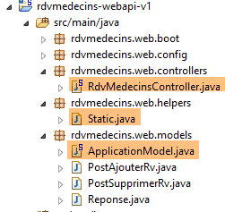 |
2.12.6. طريقة [init] الخاصة بوحدة التحكم
تحتوي وحدة التحكم [RdvMedecinsController] (انظر القسم 2.12.3) على طريقة [init] يتم تنفيذها فور إنشاء مثيل لها:
@Autowired
private ApplicationModel application;
private List<String> messages;
@PostConstruct
public void init() {
// application error messages
messages = application.getMessages();
}
- السطر 8: يتم حفظ رسائل الخطأ المخزنة في ذاكرة التخزين المؤقتة للتطبيق [ApplicationModel] محليًا في الحقل الموجود في السطر 3. وهذا يسمح للطرق بتحديد ما إذا كان التطبيق قد تم تهيئته بشكل صحيح.
2.12.7. عنوان URL [/getAllMedecins]
يتم التعامل مع عنوان URL [/getAllDoctors] بواسطة الطريقة التالية في وحدة التحكم [RdvMedecinsController]:
// list of doctors
@RequestMapping(value = "/getAllMedecins", method = RequestMethod.GET)
public Reponse getAllMedecins() {
// application status
if (messages != null) {
return new Reponse(-1, messages);
}
// list of doctors
try {
return new Reponse(0, application.getAllMedecins());
} catch (Exception e) {
return new Reponse(1, Static.getErreursForException(e));
}
}
- السطر 5: نتحقق مما إذا كان التطبيق قد تم تهيئته بشكل صحيح (messages == null). إذا لم يكن الأمر كذلك، فإننا نُرجع استجابة بـ status = -1 و data = messages؛
- السطر 10: بخلاف ذلك، نُرجع قائمة الأطباء الذين تبلغ حالتهم 0. لا تُحدث الطريقة [application.getAllMedecins()] استثناءً لأنها تُرجع ببساطة قائمة مخزنة مؤقتًا. ومع ذلك، سنحتفظ بمعالجة الاستثناء هذه تحسبًا لعدم وجود الأطباء في ذاكرة التخزين المؤقتة؛
لم نوضح بعد الحالة التي فشل فيها التطبيق في التهيئة بشكل صحيح. دعونا نوقف نظام إدارة قواعد البيانات MySQL5، ونبدأ خدمة الويب، ثم نطلب عنوان URL [/getAllMedecins]:

نحصل بالفعل على خطأ. في الظروف العادية، نحصل على العرض التالي:
|
2.12.8. عنوان URL [/getAllClients]
يتم التعامل مع عنوان URL [/getAllClients] بواسطة الطريقة التالية في [RdvMedecinsController]:
// customer list
@RequestMapping(value = "/getAllClients")
public Reponse getAllClients() {
// application status
if (messages != null) {
return new Reponse(-1, messages);
}
// customer list
try {
return new Reponse(0, application.getAllClients());
} catch (Exception e) {
return new Reponse(1, Static.getErreursForException(e));
}
}
وهي مشابهة لطريقة [getAllMedecins] التي درسناها سابقًا. النتائج التي تم الحصول عليها هي كما يلي:
|
2.12.9. عنوان URL [/getAllSlots/{doctorId}]
يتم التعامل مع عنوان URL [/getAllSlots/{doctorId}] بواسطة الطريقة التالية في وحدة التحكم [RdvMedecinsController]:
// list of physician slots
@RequestMapping(value = "/getAllCreneaux/{idMedecin}", method = RequestMethod.GET)
public Reponse getAllCreneaux(@PathVariable("idMedecin") long idMedecin) {
// application status
if (messages != null) {
return new Reponse(-1, messages);
}
// we get the doctor back
Reponse réponse = getMedecin(idMedecin);
if (réponse.getStatus() != 0) {
return réponse;
}
Medecin médecin = (Medecin) réponse.getData();
// doctor's slots
List<Creneau> créneaux = null;
try {
créneaux = application.getAllCreneaux(médecin.getId());
} catch (Exception e1) {
return new Reponse(3, Static.getErreursForException(e1));
}
// we return the answer
return new Reponse(0, Static.getListMapForCreneaux(créneaux));
}
- السطر 9: يتم طلب الطبيب المحدد بواسطة المعلمة [id] من طريقة محلية:
private Reponse getMedecin(long id) {
// we get the doctor back
Medecin médecin = null;
try {
médecin = application.getMedecinById(id);
} catch (Exception e1) {
return new Reponse(1, Static.getErreursForException(e1));
}
// existing doctor?
if (médecin == null) {
return new Reponse(2, null);
}
// ok
return new Reponse(0, médecin);
}
تُرجع هذه الطريقة قيمة حالة في النطاق [0,1,2]. لنعد إلى كود طريقة [getAllSlots]:
- الأسطر 10–12: إذا كانت الحالة ≠ 0، فقم بإرجاع الاستجابة على الفور؛
- السطر 13: نسترجع الطبيب؛
- السطر 17: نسترجع فترات زمنية هذا الطبيب؛
- السطر 22: نُرجع كائن [Static.getListMapForCreneaux(slots)] كاستجابة؛
دعونا نراجع تعريف فئة [Creneau]:
@Entity
@Table(name = "creneaux")
public class Creneau extends AbstractEntity {
private static final long serialVersionUID = 1L;
// characteristics of a RV slot
private int hdebut;
private int mdebut;
private int hfin;
private int mfin;
// a slot is linked to a doctor
@ManyToOne(fetch = FetchType.LAZY)
@JoinColumn(name = "id_medecin")
private Medecin medecin;
// foreign key
@Column(name = "id_medecin", insertable = false, updatable = false)
private long idMedecin;
...
}
- السطر 13: يتم جلب الطبيب في وضع [FetchType.LAZY]؛
تذكر استعلام JPQL الذي ينفذ طريقة [getAllCreneaux] في طبقة [DAO]:
@Query("select c from Creneau c where c.medecin.id=?1")
تفرض صيغة [c.medecin.id] إجراء ربط بين الجدولين [CRENEAUX] و[MEDECINS]. ونتيجة لذلك، يعرض الاستعلام جميع فترات مواعيد الطبيب، مع تضمين اسم الطبيب في كل منها. وعندما نقوم بتسلسل هذه الفترات إلى JSON، تظهر سلسلة JSON الخاصة بالطبيب في كل منها. وهذا أمر غير ضروري. لذا، بدلاً من تسلسل كائن [Creneau]، سنقوم بتسلسل كائن [Map] يحتوي فقط على الحقول المطلوبة.
لنعد إلى الكود الذي نظرنا إليه سابقًا:
// we return the answer
return new Reponse(0, Static.getListMapForCreneaux(créneaux));
طريقة [Static.getListMapForCreneaux] هي كما يلي:
// List<Creneau> --> List<Map>
public static List<Map<String, Object>> getListMapForCreneaux(List<Creneau> créneaux) {
// liste de dictionnaires <String,Object>
List<Map<String, Object>> liste = new ArrayList<Map<String, Object>>();
for (Creneau créneau : créneaux) {
liste.add(Static.getMapForCreneau(créneau));
}
// on rend la liste
return liste;
}
والطريقة [Static.getMapForCreneau] هي كما يلي:
// Creneau --> Map
public static Map<String, Object> getMapForCreneau(Creneau créneau) {
// qq chose à faire ?
if (créneau == null) {
return null;
}
// dictionnaire <String,Object>
Map<String, Object> hash = new HashMap<String, Object>();
hash.put("id", créneau.getId());
hash.put("hDebut", créneau.getHdebut());
hash.put("mDebut", créneau.getMdebut());
hash.put("hFin", créneau.getHfin());
hash.put("mFin", créneau.getMfin());
// on rend le dictionnaire
return hash;
}
- السطر 8: نقوم بإنشاء قاموس؛
- الأسطر 9–13: نضيف الحقول التي نريد الاحتفاظ بها في سلسلة JSON. لم يتم تضمين حقل [doctor]؛
- السطر 15: نُرجع هذا القاموس؛
النتائج التي تم الحصول عليها هي كما يلي:
|
أو هذه النتائج إذا لم تكن الفترة الزمنية موجودة:
 |
أو هذه في حالة حدوث خطأ في الوصول إلى قاعدة البيانات:
 |
2.12.10. عنوان URL [/getRvMedecinJour/{idMedecin}/{jour}]
يتم التعامل مع عنوان URL [/getRvMedecinJour/{idMedecin}/{jour}] بواسطة الطريقة التالية في وحدة التحكم [RdvMedecinsController]:
// list of doctor's appointments
@RequestMapping(value = "/getRvMedecinJour/{idMedecin}/{jour}", method = RequestMethod.GET)
public Reponse getRvMedecinJour(@PathVariable("idMedecin") long idMedecin, @PathVariable("jour") String jour) {
// application status
if (messages != null) {
return new Reponse(-1, messages);
}
// check the date
Date jourAgenda = null;
SimpleDateFormat sdf = new SimpleDateFormat("yyyy-MM-dd");
sdf.setLenient(false);
try {
jourAgenda = sdf.parse(jour);
} catch (ParseException e) {
return new Reponse(3, null);
}
// we get the doctor back
Reponse réponse = getMedecin(idMedecin);
if (réponse.getStatus() != 0) {
return réponse;
}
Medecin médecin = (Medecin) réponse.getData();
// list of appointments
List<Rv> rvs = null;
try {
rvs = application.getRvMedecinJour(médecin.getId(), jourAgenda);
} catch (Exception e1) {
return new Reponse(4, Static.getErreursForException(e1));
}
// we return the answer
return new Reponse(0, Static.getListMapForRvs(rvs));
}
- السطر 31: نُرجع كائن List<Map<String, Object>> بدلاً من كائن List<Rv>. تذكر تعريف فئة [Rv]:
@Entity
@Table(name = "rv")
public class Rv extends AbstractEntity {
private static final long serialVersionUID = 1L;
// characteristics of an Rv
@Temporal(TemporalType.DATE)
private Date jour;
// an appointment is linked to a customer
@ManyToOne(fetch = FetchType.LAZY)
@JoinColumn(name = "id_client")
private Client client;
// an appointment is linked to a time slot
@ManyToOne(fetch = FetchType.LAZY)
@JoinColumn(name = "id_creneau")
private Creneau creneau;
// foreign keys
@Column(name = "id_client", insertable = false, updatable = false)
private long idClient;
@Column(name = "id_creneau", insertable = false, updatable = false)
private long idCreneau;
...
}
- السطر 11: يتم استرداد العميل باستخدام الوضع [FetchType.LAZY]؛
- السطر 18: يتم استرداد الفتحة باستخدام الوضع [FetchType.LAZY]؛
دعونا نستذكر استعلام JPQL الذي يسترد المواعيد:
@Query("select rv from Rv rv left join fetch rv.client c left join fetch rv.creneau cr where cr.medecin.id=?1 and rv.jour=?2")
يتم تنفيذ عمليات الربط بشكل صريح لاسترداد الحقول [client] و [creneau]. علاوة على ذلك، وبسبب عملية الربط [cr.medecin.id=?1]، سنحصل أيضًا على الطبيب. وبالتالي، سيظهر الطبيب في سلسلة JSON لكل موعد. ومع ذلك، فإن هذه المعلومات المكررة غير ضرورية. دعونا نعود إلى كود الطريقة:
- السطر 31: نقوم بأنفسنا بإنشاء القاموس ليتم تسلسله إلى JSON؛
القاموس الذي تم إنشاؤه لموعد ما هو كما يلي:
// Rv --> Map
public static Map<String, Object> getMapForRv(Rv rv) {
// anything to do?
if (rv == null) {
return null;
}
// dictionary <String,Object>
Map<String, Object> hash = new HashMap<String, Object>();
hash.put("id", rv.getId());
hash.put("client", rv.getClient());
hash.put("creneau", getMapForCreneau(rv.getCreneau()));
// we return the dictionary
return hash;
}
- السطر 11: نسترد القاموس من كائن [Creneau] الذي عرضناه سابقًا؛
والنتائج التي تم الحصول عليها هي كما يلي:
أو هذه التي تحتوي على يوم غير صحيح:
 |
أو هذه التي تحتوي على اسم طبيب غير صحيح:
 |
2.12.11. عنوان URL [/getAgendaMedecinJour/{idMedecin}/{jour}]
يتم التعامل مع عنوان URL [/getAgendaMedecinJour/{idMedecin}/{jour}] بواسطة الطريقة التالية في وحدة التحكم [RdvMedecinsController]:
@RequestMapping(value = "/getAgendaMedecinJour/{idMedecin}/{jour}", method = RequestMethod.GET)
public Reponse getAgendaMedecinJour(@PathVariable("idMedecin") long idMedecin, @PathVariable("jour") String jour) {
// application status
if (messages != null) {
return new Reponse(-1, messages);
}
// check the date
Date jourAgenda = null;
SimpleDateFormat sdf = new SimpleDateFormat("yyyy-MM-dd");
sdf.setLenient(false);
try {
jourAgenda = sdf.parse(jour);
} catch (ParseException e) {
return new Reponse(3, new String[] { String.format("jour [%s] invalide", jour) });
}
// we get the doctor back
Reponse réponse = getMedecin(idMedecin);
if (réponse.getStatus() != 0) {
return réponse;
}
Medecin médecin = (Medecin) réponse.getData();
// get your diary back
AgendaMedecinJour agenda = null;
try {
agenda = application.getAgendaMedecinJour(médecin.getId(), jourAgenda);
} catch (Exception e1) {
return new Reponse(4, Static.getErreursForException(e1));
}
// ok
return new Reponse(0, Static.getMapForAgendaMedecinJour(agenda));
}
}
- السطر 30 يُرجع كائنًا من النوع List<Map<String, Object>>.
الطريقة [Static.getMapForAgendaMedecinJour] هي كما يلي:
// AgendaMedecinJour --> Map
public static Map<String, Object> getMapForAgendaMedecinJour(AgendaMedecinJour agenda) {
// anything to do?
if (agenda == null) {
return null;
}
// dictionary <String,Object>
Map<String, Object> hash = new HashMap<String, Object>();
hash.put("medecin", agenda.getMedecin());
hash.put("jour", new SimpleDateFormat("yyyy-MM-dd").format(agenda.getJour()));
List<Map<String, Object>> créneaux = new ArrayList<Map<String, Object>>();
for (CreneauMedecinJour créneau : agenda.getCreneauxMedecinJour()) {
créneaux.add(getMapForCreneauMedecinJour(créneau));
}
hash.put("creneauxMedecin", créneaux);
// we return the dictionary
return hash;
}
يحتوي القاموس الذي تم إنشاؤه على ثلاثة حقول:
- [doctor]: الطبيب صاحب الجدول. احتفظنا بهذه المعلومة لأنها تظهر مرة واحدة فقط، بينما في الحالات السابقة، كانت تتكرر في كل سلسلة JSON؛
- [day]: يوم التقويم؛
- [doctorSlots]: قائمة المواعيد المتاحة للطبيب، بما في ذلك أي مواعيد محددة لتلك الفترة؛
طريقة [getMapForCreneauMedecinJour] المستخدمة في السطر 13 هي كما يلي:
// CreneauMedecinJour --> map
public static Map<String, Object> getMapForCreneauMedecinJour(CreneauMedecinJour créneau) {
// anything to do?
if (créneau == null) {
return null;
}
// dictionary <String,Object>
Map<String, Object> hash = new HashMap<String, Object>();
hash.put("creneau", getMapForCreneau(créneau.getCreneau()));
hash.put("rv", getMapForRv(créneau.getRv()));
// we return the dictionary
return hash;
}
- السطران 9-10: نستخدم القواميس التي تمت مناقشتها سابقًا لأنواع [Creneau] و [Rv]، والتي لا تحتوي بالتالي على أي كائنات [Medecin]؛
النتائج التي تم الحصول عليها هي كما يلي:
|
أو هذه إذا كان اليوم غير صحيح:
 |
أو هذه إذا كان رقم تعريف الطبيب غير صالح:
 |
2.12.12. عنوان URL [/getMedecinById/{id}]
يتم التعامل مع عنوان URL [/getMedecinById/{id}] بواسطة الطريقة التالية في وحدة التحكم [RdvMedecinsController]:
@RequestMapping(value = "/getMedecinById/{id}", method = RequestMethod.GET)
public Reponse getMedecinById(@PathVariable("id") long id) {
// application status
if (messages != null) {
return new Reponse(-1, messages);
}
// we get the doctor back
return getMedecin(id);
}
السطر 8، طريقة [getMedecin] هي كما يلي:
private Reponse getMedecin(long id) {
// we get the doctor back
Medecin médecin = null;
try {
médecin = application.getMedecinById(id);
} catch (Exception e1) {
return new Reponse(1, Static.getErreursForException(e1));
}
// existing doctor?
if (médecin == null) {
return new Reponse(2, null);
}
// ok
return new Reponse(0, médecin);
}
النتائج هي كما يلي:
|
أو هذه إذا كان رقم تعريف الطبيب غير صحيح:
 |
2.12.13. عنوان URL [/getClientById/{id}]
يتم التعامل مع عنوان URL [/getClientById/{id}] بواسطة الطريقة التالية في وحدة التحكم [RdvMedecinsController]:
@RequestMapping(value = "/getClientById/{id}", method = RequestMethod.GET)
public Reponse getClientById(@PathVariable("id") long id) {
// application status
if (messages != null) {
return new Reponse(-1, messages);
}
// we get the customer back
return getClient(id);
}
السطر 8، طريقة [getClient] هي كما يلي:
private Reponse getClient(long id) {
// we get the customer back
Client client = null;
try {
client = application.getClientById(id);
} catch (Exception e1) {
return new Reponse(1, Static.getErreursForException(e1));
}
// existing customer?
if (client == null) {
return new Reponse(2, null);
}
// ok
return new Reponse(0, client);
}
النتائج هي كما يلي:
|
أو هذه النتائج إذا كان معرف العميل غير صحيح:
 |
2.12.14. عنوان URL [/getCreneauById/{id}]
يتم التعامل مع عنوان URL [/getCreneauById/{id}] بواسطة الطريقة التالية في وحدة التحكم [RdvMedecinsController]:
@RequestMapping(value = "/getCreneauById/{id}", method = RequestMethod.GET)
public Reponse getCreneauById(@PathVariable("id") long id) {
// application status
if (messages != null) {
return new Reponse(-1, messages);
}
// we get the slot back
Reponse réponse = getCreneau(id);
if (réponse.getStatus() == 0) {
réponse.setData(Static.getMapForCreneau((Creneau) réponse.getData()));
}
// result
return réponse;
}
السطر 8، طريقة [getCreneau] هي كما يلي:
private Reponse getCreneau(long id) {
// we get the slot back
Creneau créneau = null;
try {
créneau = application.getCreneauById(id);
} catch (Exception e1) {
return new Reponse(1, Static.getErreursForException(e1));
}
// existing niche?
if (créneau == null) {
return new Reponse(2, null);
}
// ok
return new Reponse(0, créneau);
}
النتائج التي تم الحصول عليها هي كما يلي:
|
أو هذه النتائج إذا كان رقم الفتحة غير صحيح:
 |
2.12.15. عنوان URL [/getRvById/{id}]
يتم التعامل مع عنوان URL [/getRvById/{id}] بواسطة الطريقة التالية في وحدة التحكم [RdvMedecinsController]:
@RequestMapping(value = "/getRvById/{id}", method = RequestMethod.GET)
public Reponse getRvById(@PathVariable("id") long id) {
// application status
if (messages != null) {
return new Reponse(-1, messages);
}
// recovering the rv
Reponse réponse = getRv(id);
if (réponse.getStatus() == 0) {
réponse.setData(Static.getMapForRv2((Rv) réponse.getData()));
}
// result
return réponse;
}
السطر 8، طريقة [getRv] هي كما يلي:
private Reponse getRv(long id) {
// we recover the Rv
Rv rv = null;
try {
rv = application.getRvById(id);
} catch (Exception e1) {
return new Reponse(1, Static.getErreursForException(e1));
}
// Existing Rv?
if (rv == null) {
return new Reponse(2, null);
}
// ok
return new Reponse(0, rv);
}
السطر 10، طريقة [Static.getMapForRv2] هي كما يلي:
// Rv --> Map
public static Map<String, Object> getMapForRv2(Rv rv) {
// qq chose à faire ?
if (rv == null) {
return null;
}
// dictionnaire <String,Object>
Map<String, Object> hash = new HashMap<String, Object>();
hash.put("id", rv.getId());
hash.put("idClient", rv.getIdClient());
hash.put("idCreneau", rv.getIdCreneau());
// on rend le dictionnaire
return hash;
}
النتائج هي كما يلي:
|
أو هذه إذا كان معرف الموعد غير صحيح:
 |
2.12.16. عنوان URL [/ajouterRv]
يتم التعامل مع عنوان URL [/ajouterRv] بالطريقة التالية في وحدة التحكم [RdvMedecinsController]:
@RequestMapping(value = "/ajouterRv", method = RequestMethod.POST, consumes = "application/json; charset=UTF-8")
public Reponse ajouterRv(@RequestBody PostAjouterRv post) {
// application status
if (messages != null) {
return new Reponse(-1, messages);
}
// retrieve posted values
String jour = post.getJour();
long idCreneau = post.getIdCreneau();
long idClient = post.getIdClient();
// check the date
Date jourAgenda = null;
SimpleDateFormat sdf = new SimpleDateFormat("yyyy-MM-dd");
sdf.setLenient(false);
try {
jourAgenda = sdf.parse(jour);
} catch (ParseException e) {
return new Reponse(6, null);
}
// we get the slot back
Reponse réponse = getCreneau(idCreneau);
if (réponse.getStatus() != 0) {
return réponse;
}
Creneau créneau = (Creneau) réponse.getData();
// we get the customer back
réponse = getClient(idClient);
if (réponse.getStatus() != 0) {
réponse.incrStatusBy(2);
return réponse;
}
Client client = (Client) réponse.getData();
// we add the Rv
Rv rv = null;
try {
rv = application.ajouterRv(jourAgenda, créneau, client);
} catch (Exception e1) {
return new Reponse(5, Static.getErreursForException(e1));
}
// we return the answer
return new Reponse(0, Static.getMapForRv(rv));
}
لا يوجد هنا أي شيء لم نره من قبل. في السطر 41، نُرجع الموعد الذي تمت إضافته في السطر 36.
تبدو النتائج التي تم الحصول عليها كما يلي باستخدام [Advanced Rest Client]:
 |
أو هكذا إذا قدمنا، على سبيل المثال، رقم فتحة غير موجود:
 |
|
2.12.17. عنوان URL [/deleteAppointment]
يتم التعامل مع عنوان URL [/deleteAppointment] بواسطة الطريقة التالية في وحدة التحكم [RdvMedecinsController]:
@RequestMapping(value = "/supprimerRv", method = RequestMethod.POST, consumes = "application/json; charset=UTF-8")
public Reponse supprimerRv(@RequestBody PostSupprimerRv post) {
// application status
if (messages != null) {
return new Reponse(-1, messages);
}
// retrieve posted values
long idRv = post.getIdRv();
// recovering the rv
Reponse réponse = getRv(idRv);
if (réponse.getStatus() != 0) {
return réponse;
}
// rv deletion
try {
application.supprimerRv(idRv);
} catch (Exception e1) {
return new Reponse(3, Static.getErreursForException(e1));
}
// ok
return new Reponse(0, null);
}
 |
أو هذه إذا كان معرف الموعد غير موجود:
 |
لقد انتهينا من وحدة التحكم. الآن دعونا نرى كيفية تكوين المشروع.
2.12.18. تكوين خدمة الويب
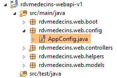 |
فئة التكوين [AppConfig] هي كما يلي:
package rdvmedecins.web.config;
import org.springframework.boot.autoconfigure.EnableAutoConfiguration;
import org.springframework.context.annotation.ComponentScan;
import org.springframework.context.annotation.Import;
import rdvmedecins.config.DomainAndPersistenceConfig;
@EnableAutoConfiguration
@ComponentScan(basePackages = { "rdvmedecins.web" })
@Import({ DomainAndPersistenceConfig.class })
public class AppConfig {
}
- السطر 9: نضبط الوضع على [AutoConfiguration] حتى يتمكن Spring Boot من تهيئة المشروع استنادًا إلى الملفات التي يعثر عليها في مسار فئات المشروع؛
- السطر 10: نحدد أنه يجب البحث عن مكونات Spring في الحزمة [rdvmedecins.web] وحزمها الفرعية. وبهذه الطريقة سيتم اكتشاف المكونات التالية:
- [@RestController RdvMedecinsController] في حزمة [rdvmedecins.web.controllers]؛
- [@Component ApplicationModel] في حزمة [rdvmedecins.web.models]؛
- السطر 11: نقوم باستيراد فئة [DomainAndPersistenceConfig]، التي تقوم بتكوين مشروع [rdvmedecins-metier-dao] لتوفير الوصول إلى حبوب ذلك المشروع؛
2.12.19. الفئة القابلة للتنفيذ لخدمة الويب
 |
فئة [Boot] هي كما يلي:
package rdvmedecins.web.boot;
import org.springframework.boot.SpringApplication;
import rdvmedecins.web.config.AppConfig;
public class Boot {
public static void main(String[] args) {
SpringApplication.run(AppConfig.class, args);
}
}
السطر 10: يتم تنفيذ الطريقة الثابتة [SpringApplication.run] مع فئة تكوين المشروع [AppConfig] كمعلمة أولى لها. ستقوم هذه الطريقة بتكوين المشروع تلقائيًا، وتشغيل خادم Tomcat المضمن في التبعيات، ونشر وحدة التحكم [RdvMedecinsController] عليه.
فيما يلي السجلات أثناء التنفيذ:
- السطر 17: بدء تشغيل خادم Tomcat؛
- الأسطر 23-31: يتم تهيئة طبقات [منطق الأعمال، DAO، JPA]؛
- السطر 34: تم اكتشاف الطريقة التي تتعامل مع عنوان URL [/getRvMedecinJour/{idMedecin}/{jour}]. تتكرر عملية اكتشاف طرق وحدة التحكم هذه حتى السطر 44؛
- السطر 52: أصبحت خدمة Spring MVC [DispatcherServlet] جاهزة للاستجابة لطلبات عملاء الويب؛
لدينا الآن خدمة ويب عاملة يمكن لعميل الويب الاستعلام عنها. سنقوم الآن بمعالجة مسألة تأمين هذه الخدمة: نريد أن يتمكن أشخاص معينون فقط من إدارة مواعيد الأطباء. للقيام بذلك، سنستخدم إطار عمل Spring Security، وهو أحد مكونات نظام Spring.
2.13. مقدمة إلى Spring Security
سنقوم مرة أخرى باستيراد دليل Spring باتباع الخطوات من 1 إلى 3 أدناه:
 |
 |
يتألف المشروع من العناصر التالية:
- في مجلد [templates]، ستجد صفحات HTML الخاصة بالمشروع؛
- [Application]: هي الفئة القابلة للتنفيذ للمشروع؛
- [MvcConfig]: هي فئة تكوين Spring MVC؛
- [WebSecurityConfig]: هي فئة تكوين Spring Security؛
2.13.1. تكوين Maven
المشروع [3] هو مشروع Maven. دعونا نفحص ملف [pom.xml] الخاص به لنرى تبعياته:
<parent>
<groupId>org.springframework.boot</groupId>
<artifactId>spring-boot-starter-parent</artifactId>
<version>1.1.1.RELEASE</version>
</parent>
<dependencies>
<dependency>
<groupId>org.springframework.boot</groupId>
<artifactId>spring-boot-starter-thymeleaf</artifactId>
</dependency>
<dependency>
<groupId>org.springframework.boot</groupId>
<artifactId>spring-boot-starter-security</artifactId>
</dependency>
</dependencies>
- الأسطر 1–5: المشروع هو مشروع Spring Boot؛
- الأسطر 8–11: التبعية لإطار عمل [Thymeleaf]، الذي يسمح بإنشاء صفحات HTML ديناميكية. يمكن لهذا الإطار أن يحل محل JSP (Java Server Pages)، الذي كان حتى وقت قريب إطار العرض الافتراضي لـ Spring MVC؛
- الأسطر 12–15: الاعتماد على إطار عمل Spring Security؛
2.13.2. طرق عرض Thymeleaf
 |
تبدو طريقة عرض [home.html] كما يلي:
 |
<!DOCTYPE html>
<html xmlns="http://www.w3.org/1999/xhtml"
xmlns:th="http://www.thymeleaf.org"
xmlns:sec="http://www.thymeleaf.org/thymeleaf-extras-springsecurity3">
<head>
<title>Spring Security Example</title>
</head>
<body>
<h1>Welcome!</h1>
<p>
Click <a th:href="@{/hello}">here</a> to see a greeting.
</p>
</body>
</html>
- السمات [th:xx] هي سمات Thymeleaf. يتم تفسيرها بواسطة Thymeleaf قبل إرسال صفحة HTML إلى العميل. لا يراها العميل؛
- السطر 12: ستؤدي السمة [th:href="@{/hello}"] إلى إنشاء السمة [href] لعلامة <a>. وستؤدي القيمة [@{/hello}] إلى إنشاء المسار [<context>/hello]، حيث يمثل [context] سياق تطبيق الويب؛
فيما يلي كود HTML الذي تم إنشاؤه:
- السطر 10: سياق التطبيق هو الجذر /؛
عرض [hello.html] كما يلي:
 |
<!DOCTYPE html>
<html xmlns="http://www.w3.org/1999/xhtml"
xmlns:th="http://www.thymeleaf.org"
xmlns:sec="http://www.thymeleaf.org/thymeleaf-extras-springsecurity3">
<head>
<title>Hello World!</title>
</head>
<body>
<h1 th:inline="text">Hello [[${#httpServletRequest.remoteUser}]]!</h1>
<form th:action="@{/logout}" method="post">
<input type="submit" value="Sign Out" />
</form>
</body>
</html>
- السطر 9: ستقوم السمة [th:inline="text"] بإنشاء نص علامة <h1>. يحتوي هذا النص على تعبير $ يجب تقييمه. العنصر [[${#httpServletRequest.remoteUser}]] هو قيمة السمة [RemoteUser] للطلب HTTP الحالي. وهذا هو اسم المستخدم الذي قام بتسجيل الدخول؛
- السطر 10: نموذج HTML. ستقوم السمة [th:action="@{/logout}"] بإنشاء السمة [action] لعلامة [form]. ستقوم القيمة [@{/logout}] بإنشاء المسار [<context>/logout]، حيث [context] هو سياق تطبيق الويب؛
الرمز HTML الذي تم إنشاؤه هو كما يلي:
- السطر 8: ترجمة Hello [[${#httpServletRequest.remoteUser}]]!;
- السطر 9: ترجمة @{/logout};
- السطر 11: حقل مخفي باسم (سمة الاسم) _csrf؛
الطريقة النهائية [login.html] هي كما يلي:
 |
<!DOCTYPE html>
<html xmlns="http://www.w3.org/1999/xhtml"
xmlns:th="http://www.thymeleaf.org"
xmlns:sec="http://www.thymeleaf.org/thymeleaf-extras-springsecurity3">
<head>
<title>Spring Security Example</title>
</head>
<body>
<div th:if="${param.error}">Invalid username and password.</div>
<div th:if="${param.logout}">You have been logged out.</div>
<form th:action="@{/login}" method="post">
<div>
<label> User Name : <input type="text" name="username" />
</label>
</div>
<div>
<label> Password: <input type="password" name="password" />
</label>
</div>
<div>
<input type="submit" value="Sign In" />
</div>
</form>
</body>
</html>
- السطر 9: تضمن السمة [th:if="${param.error}"] أن علامة <div> لن يتم إنشاؤها إلا إذا كان عنوان URL الذي يعرض صفحة تسجيل الدخول يحتوي على المعلمة [error] (http://context/login?error)؛
- السطر 10: تضمن السمة [th:if="${param.logout}"] أن علامة <div> لن يتم إنشاؤها إلا إذا كان عنوان URL الذي يعرض صفحة تسجيل الدخول يحتوي على المعلمة [logout] (http://context/login?logout)؛
- الأسطر 11–23: نموذج HTML؛
- السطر 11: سيتم إرسال النموذج إلى عنوان URL [<context>/login]، حيث <context> هو سياق تطبيق الويب؛
- السطر 13: حقل إدخال باسم [username]؛
- السطر 17: حقل إدخال باسم [password]؛
رمز HTML الذي تم إنشاؤه هو كما يلي:
لاحظ في السطر 21 أن Thymeleaf قد أضاف حقلًا مخفيًا باسم [_csrf].
2.13.3. تكوين Spring MVC
 |
تقوم فئة [MvcConfig] بتكوين إطار عمل Spring MVC:
package hello;
import org.springframework.context.annotation.Configuration;
import org.springframework.web.servlet.config.annotation.ViewControllerRegistry;
import org.springframework.web.servlet.config.annotation.WebMvcConfigurerAdapter;
@Configuration
public class MvcConfig extends WebMvcConfigurerAdapter {
@Override
public void addViewControllers(ViewControllerRegistry registry) {
registry.addViewController("/home").setViewName("home");
registry.addViewController("/").setViewName("home");
registry.addViewController("/hello").setViewName("hello");
registry.addViewController("/login").setViewName("login");
}
}
- السطر 7: تجعل العلامة [@Configuration] فئة [MvcConfig] فئة تكوين؛
- السطر 8: تمتد فئة [MvcConfig] إلى فئة [WebMvcConfigurerAdapter] لتجاوز طرق معينة؛
- السطر 10: إعادة تعريف طريقة من الفئة الأصلية؛
- الأسطر 11–16: تتيح طريقة [addViewControllers] ربط عناوين URL بعروض HTML. ويتم إجراء الروابط التالية هناك:
عرض | |
/templates/home.html | |
/القوالب/hello.html | |
/القوالب/تسجيل_الدخول.html |
اللاحقة [html] والمجلد [templates] هما القيمتان الافتراضيتان اللتان يستخدمهما Thymeleaf. يمكن تغييرهما عبر التكوين. يجب أن يكون المجلد [templates] في جذر مسار فئات المشروع:
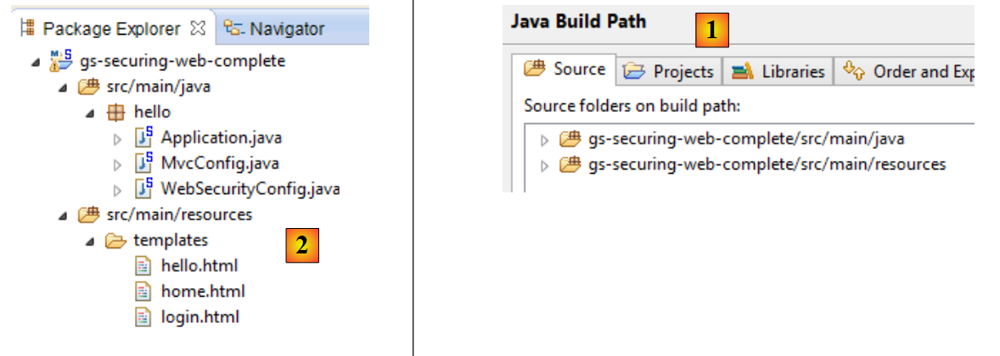 |
في [1] أعلاه، يعد كل من مجلدي [main] و[resources] مجلدين مصدرين. وهذا يعني أن محتوياتهما ستكون في جذر مسار فئات المشروع. وبالتالي، في [2]، سيكون مجلدا [hello] و[templates] في جذر مسار فئات المشروع.
2.13.4. تكوين Spring Security
 |
تقوم فئة [WebSecurityConfig] بتكوين إطار عمل Spring Security:
package hello;
import org.springframework.context.annotation.Configuration;
import org.springframework.security.config.annotation.authentication.builders.AuthenticationManagerBuilder;
import org.springframework.security.config.annotation.web.builders.HttpSecurity;
import org.springframework.security.config.annotation.web.configuration.WebSecurityConfigurerAdapter;
import org.springframework.security.config.annotation.web.servlet.configuration.EnableWebMvcSecurity;
@Configuration
@EnableWebMvcSecurity
public class WebSecurityConfig extends WebSecurityConfigurerAdapter {
@Override
protected void configure(HttpSecurity http) throws Exception {
http.authorizeRequests().antMatchers("/", "/home").permitAll().anyRequest().authenticated();
http.formLogin().loginPage("/login").permitAll().and().logout().permitAll();
}
@Override
protected void configure(AuthenticationManagerBuilder auth) throws Exception {
auth.inMemoryAuthentication().withUser("user").password("password").roles("USER");
}
}
- السطر 9: تجعل العلامة [@Configuration] فئة [WebSecurityConfig] فئة تكوين؛
- السطر 10: تجعل العلامة [@EnableWebSecurity] فئة [WebSecurityConfig] فئة تكوين Spring Security؛
- السطر 11: تمتد فئة [WebSecurity] إلى فئة [WebSecurityConfigurerAdapter] لتجاوز طرق معينة؛
- السطر 12: إعادة تعريف طريقة من الفئة الأصلية؛
- الأسطر 13-16: يتم تجاوز الطريقة [configure(HttpSecurity http)] لتعريف حقوق الوصول لمختلف عناوين URL الخاصة بالتطبيق؛
- السطر 14: تتيح طريقة [http.authorizeRequests()] ربط عناوين URL بحقوق الوصول. ويتم إجراء الروابط التالية هناك:
القاعدة | رمز | |
الوصول بدون مصادقة | | |
الوصول المصادق عليه فقط |
- السطر 15: يحدد طريقة المصادقة. تتم المصادقة عبر نموذج URL [/login] متاح للجميع [http.formLogin().loginPage("/login").permitAll()]. كما أن تسجيل الخروج متاح للجميع.
- الأسطر 19-21: تعيد تعريف الطريقة [configure(AuthenticationManagerBuilder auth)] التي تدير المستخدمين؛
- السطر 20: تتم المصادقة باستخدام مستخدمين مبرمجين [auth.inMemoryAuthentication()]. يتم تعريف المستخدم هنا باستخدام اسم المستخدم [user] وكلمة المرور [password] والدور [USER]. يمكن منح المستخدمين الذين لديهم نفس الدور نفس الأذونات؛
2.13.5. فئة قابلة للتنفيذ
 |
فئة [Application] هي كما يلي:
package hello;
import org.springframework.boot.autoconfigure.EnableAutoConfiguration;
import org.springframework.boot.SpringApplication;
import org.springframework.context.annotation.ComponentScan;
import org.springframework.context.annotation.Configuration;
@EnableAutoConfiguration
@Configuration
@ComponentScan
public class Application {
public static void main(String[] args) throws Throwable {
SpringApplication.run(Application.class, args);
}
}
- السطر 8: توجه العلامة [@EnableAutoConfiguration] Spring Boot (السطر 3) إلى تنفيذ التكوين الذي لم يقم المطور بإعداده صراحةً؛
- السطر 9: يجعل فئة [Application] فئة تكوين Spring؛
- السطر 10: يوجه النظام إلى فحص الدليل الذي يحتوي على فئة [Application] للبحث عن مكونات Spring. وبالتالي سيتم اكتشاف الفئتين [MvcConfig] و [WebSecurityConfig] لأنهما تحتويان على تعليق [@Configuration]؛
- السطر 13: الطريقة [main] للفئة القابلة للتنفيذ؛
- السطر 14: يتم تنفيذ الطريقة الثابتة [SpringApplication.run] باستخدام فئة التكوين [Application] كمعلمة. لقد صادفنا هذه العملية من قبل ونعلم أن خادم Tomcat المضمن في تبعيات Maven للمشروع سيتم تشغيله ونشر المشروع عليه. رأينا أن أربعة عناوين URL تمت إدارتها [/, /home, /login, /hello] وأن بعضها محمي بحقوق الوصول.
2.13.6. اختبار التطبيق
لنبدأ بطلب عنوان URL [/]، وهو أحد عناوين URL الأربعة المقبولة. وهو مرتبط بالعرض [/templates/home.html]:
 |
عنوان URL المطلوب [/] متاح للجميع. ولهذا السبب تمكنا من استرداده. الرابط [هنا] هو كما يلي:
سيتم طلب عنوان URL [/hello] عند النقر على الرابط. وهذا الرابط محمي:
القاعدة | رمز | |
الوصول بدون مصادقة | | |
الوصول المصادق عليه فقط |
يجب أن تكون مصادقًا عليه للوصول إليه. سيقوم Spring Security بعد ذلك بإعادة توجيه متصفح العميل إلى صفحة المصادقة. استنادًا إلى التكوين الموضح، هذه هي الصفحة الموجودة على عنوان URL [/login]. هذه الصفحة متاحة للجميع:
http.formLogin().loginPage("/login").permitAll().and().logout().permitAll();
لذا نحصل على [1]:
 |
فيما يلي شفرة المصدر للصفحة التي تم الحصول عليها:
- في السطر 7، يظهر حقل مخفي غير موجود في الصفحة الأصلية [login.html]. أضافه Thymeleaf. تم تصميم هذا الرمز، المعروف باسم CSRF (تزوير الطلبات عبر المواقع)، للقضاء على ثغرة أمنية. يجب إرسال هذا الرمز إلى Spring Security مع المصادقة حتى يتم قبوله؛
نتذكر أن Spring Security لا يتعرف إلا على زوج المستخدم/كلمة المرور. إذا أدخلنا شيئًا آخر في [2]، فسنحصل على نفس الصفحة مع رسالة خطأ في [3]. قام Spring Security بإعادة توجيه المتصفح إلى عنوان URL [http://localhost:8080/login?error]. أدى وجود المعلمة [error] إلى عرض العلامة:
<div th:if="${param.error}">Invalid username and password.</div>
الآن، دعونا ندخل قيم اسم المستخدم وكلمة المرور المتوقعة [4]:
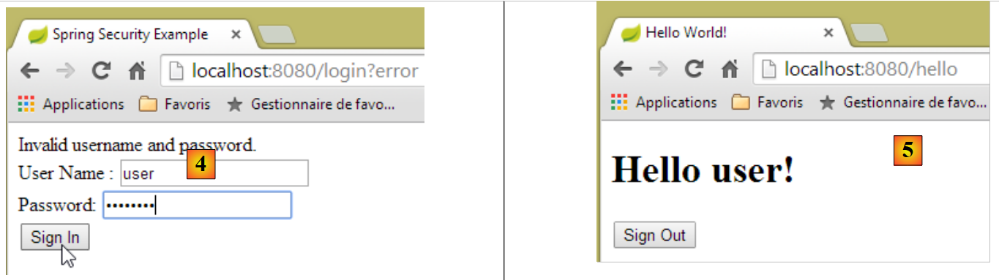 |
- في [4]، نقوم بتسجيل الدخول؛
- في [5]، يقوم Spring Security بإعادة توجيهنا إلى عنوان URL [/hello] لأن هذا هو عنوان URL الذي طلبناه عندما تمت إعادة توجيهنا إلى صفحة تسجيل الدخول. تم عرض هوية المستخدم من خلال السطر التالي من [hello.html]:
<h1 th:inline="text">Hello [[${#httpServletRequest.remoteUser}]]!</h1>
تعرض الصفحة [5] النموذج التالي:
<form th:action="@{/logout}" method="post">
<input type="submit" value="Sign Out" />
</form>
عند النقر على زر [تسجيل الخروج]، يتم إرسال طلب POST إلى عنوان URL [/logout]. ومثل عنوان URL [/login]، فإن هذا العنوان متاح للجميع:
http.formLogin().loginPage("/login").permitAll().and().logout().permitAll();
في تعيين عناوين URL/العرض لدينا، لم نحدد أي شيء لعنوان URL [/logout]. ماذا سيحدث؟ دعونا نجرب ذلك:
 |
- في [6]، نضغط على زر [Sign Out]؛
- في [7]، نرى أنه تمت إعادة توجيهنا إلى عنوان URL [http://localhost:8080/login?logout]. طلب Spring Security إعادة التوجيه هذه. تسبب وجود المعلمة [logout] في عنوان URL في عرض السطر التالي في العرض:
<div th:if="${param.logout}">You have been logged out.</div>
2.13.7. الخلاصة
في المثال السابق، كان بإمكاننا كتابة تطبيق الويب أولاً ثم تأمينه لاحقًا. Spring Security غير تدخلي. يمكنك تنفيذ الأمان لتطبيق ويب تمت كتابته بالفعل. علاوة على ذلك، اكتشفنا النقاط التالية:
- من الممكن تعريف صفحة مصادقة؛
- يجب أن تكون المصادقة مصحوبة برمز CSRF الصادر عن Spring Security؛
- في حالة فشل المصادقة، يتم إعادة توجيهك إلى صفحة المصادقة مع معلمة خطأ إضافية في عنوان URL؛
- إذا نجحت المصادقة، يتم إعادة توجيهك إلى الصفحة المطلوبة وقت المصادقة. إذا طلبت صفحة المصادقة مباشرةً دون المرور بصفحة وسيطة، فإن Spring Security يعيد توجيهك إلى عنوان URL [/] (لم يتم توضيح هذه الحالة)؛
- يمكنك تسجيل الخروج عن طريق طلب عنوان URL [/logout] باستخدام طلب POST. ثم يقوم Spring Security بإعادة توجيهك إلى صفحة المصادقة مع معلمة "logout" في عنوان URL؛
تستند جميع هذه الاستنتاجات إلى السلوك الافتراضي لـ Spring Security. يمكن تغيير هذا السلوك من خلال التكوين عن طريق تجاوز طرق معينة لفئة [WebSecurityConfigurerAdapter].
لن يكون الدرس السابق مفيدًا لنا كثيرًا في المستقبل. سنستخدم، في الواقع، ما يلي:
- قاعدة بيانات لتخزين المستخدمين وكلمات مرورهم وأدوارهم؛
- المصادقة المستندة إلى رأس HTTP؛
هناك عدد قليل جدًا من الدروس المتاحة لما نريد القيام به هنا. الحل الذي سنقترحه هو مزيج من مقتطفات الكود الموجودة هنا وهناك.
2.14. تنفيذ الأمان لخدمة حجز المواعيد عبر الإنترنت
2.14.1. قاعدة البيانات
يتم تحديث قاعدة بيانات [rdvmedecins] لتشمل المستخدمين وكلمات مرورهم وأدوارهم. تمت إضافة ثلاثة جداول جديدة:

الجدول [USERS]: users
- ID: المفتاح الأساسي؛
- VERSION: عمود إصدار الصف؛
- IDENTITY: معرف وصفية للمستخدم؛
- LOGIN: اسم تسجيل دخول المستخدم؛
- PASSWORD: كلمة المرور الخاصة به؛
في جدول USERS، لا يتم تخزين كلمات المرور بنص عادي:
 |
الخوارزمية المستخدمة لتشفير كلمات المرور هي خوارزمية BCRYPT.
جدول [ROLES]: الأدوار
- ID: المفتاح الأساسي؛
- VERSION: عمود الإصدار للصف؛
- NAME: اسم الدور. بشكل افتراضي، يتوقع Spring Security أن تكون الأسماء بالصيغة ROLE_XX، على سبيل المثال ROLE_ADMIN أو ROLE_GUEST؛
 |
الجدول [USERS_ROLES]: جدول ربط المستخدمين/الأدوار
يمكن أن يكون للمستخدم أدوار متعددة، ويمكن أن يشمل الدور مستخدمين متعددين. هذه علاقة متعددة إلى متعددة يمثلها جدول [USERS_ROLES].
- ID: المفتاح الأساسي؛
- VERSION: عمود إصدار الصف؛
- USER_ID: معرف المستخدم؛
- ROLE_ID: معرف الدور؛
 |
نظرًا لأننا نقوم بتعديل قاعدة البيانات، يجب تعديل جميع طبقات المشروع [منطق الأعمال، DAO، JPA]:
 |
2.14.2. مشروع Eclipse الجديد لـ [منطق الأعمال، DAO، JPA]
نقوم بنسخ المشروع الأولي [rdvmedecins-business-dao] إلى [rdvmedecins-business-dao-v2]:
 |
- في [1]: المشروع الجديد؛
- في [2]: تم تجميع التغييرات التي أدخلتها عملية تنفيذ الأمان في حزمة واحدة [rdvmedecins.security]. تنتمي هذه العناصر الجديدة إلى طبقات [JPA] و[DAO]، ولكن من أجل التبسيط قمت بتجميعها في حزمة واحدة.
2.14.3. الكيانات [JPA] الجديدة
 |
تحدد طبقة JPA ثلاث كيانات جديدة:
 |
تمثل فئة [User] الجدول [USERS]:
package rdvmedecins.entities;
import javax.persistence.Column;
import javax.persistence.Entity;
import javax.persistence.Table;
@Entity
@Table(name = "USERS")
public class User extends AbstractEntity {
private static final long serialVersionUID = 1L;
// properties
private String identity;
private String login;
private String password;
// manufacturer
public User() {
}
public User(String identity, String login, String password) {
this.identity = identity;
this.login = login;
this.password = password;
}
// identity
@Override
public String toString() {
return String.format("User[%s,%s,%s]", identity, login, password);
}
// getters and setters
....
}
- السطر 9: تمتد الفئة إلى فئة [AbstractEntity] المستخدمة بالفعل للكيانات الأخرى؛
- الأسطر 13–15: لم يتم تحديد أسماء الأعمدة لأنها تحمل نفس أسماء الحقول المرتبطة بها؛
تعكس فئة [Role] جدول [ROLES]:
package rdvmedecins.entities;
import javax.persistence.Column;
import javax.persistence.Entity;
import javax.persistence.Table;
@Entity
@Table(name = "ROLES")
public class Role extends AbstractEntity {
private static final long serialVersionUID = 1L;
// properties
private String name;
// manufacturers
public Role() {
}
public Role(String name) {
this.name = name;
}
// identity
@Override
public String toString() {
return String.format("Role[%s]", name);
}
// getters and setters
...
}
تمثل فئة [UserRole] الجدول [USERS_ROLES]:
package rdvmedecins.entities;
import javax.persistence.Entity;
import javax.persistence.JoinColumn;
import javax.persistence.ManyToOne;
import javax.persistence.Table;
@Entity
@Table(name = "USERS_ROLES")
public class UserRole extends AbstractEntity {
private static final long serialVersionUID = 1L;
// a UserRole refers to a User
@ManyToOne
@JoinColumn(name = "USER_ID")
private User user;
// a UserRole refers to a Role
@ManyToOne
@JoinColumn(name = "ROLE_ID")
private Role role;
// getters and setters
...
}
- الأسطر 15–17: تعريف المفتاح الخارجي من جدول [USERS_ROLES] إلى جدول [USERS]؛
- الأسطر 19-21: تنفيذ المفتاح الخارجي من جدول [USERS_ROLES] إلى جدول [ROLES]؛
2.14.4. التغييرات على طبقة [DAO]
 |
تم تحسين طبقة [DAO] بثلاثة [Repository]s جديدة:
 |
تدير واجهة [UserRepository] الوصول إلى كيانات [User]:
package rdvmedecins.repositories;
import org.springframework.data.jpa.repository.Query;
import org.springframework.data.repository.CrudRepository;
import rdvmedecins.entities.Role;
import rdvmedecins.entities.User;
public interface UserRepository extends CrudRepository<User, Long> {
// list of user roles identified by id
@Query("select ur.role from UserRole ur where ur.user.id=?1")
Iterable<Role> getRoles(long id);
// list of user roles identified by login and password
@Query("select ur.role from UserRole ur where ur.user.login=?1 and ur.user.password=?2")
Iterable<Role> getRoles(String login, String password);
// search for a user via login
User findUserByLogin(String login);
}
- السطر 9: واجهة [UserRepository] تمتد واجهة Spring Data [CrudRepository] (السطر 4)؛
- السطران 12-13: تسترد طريقة [getRoles(User user)] جميع الأدوار الخاصة بمستخدم محدد بواسطة [id]
- السطران 16-17: كما هو مذكور أعلاه، ولكن بالنسبة لمستخدم يتم تحديده بواسطة اسم المستخدم وكلمة المرور؛
تدير واجهة [RoleRepository] الوصول إلى كيانات [Role]:
package rdvmedecins.security;
import org.springframework.data.repository.CrudRepository;
public interface RoleRepository extends CrudRepository<Role, Long> {
// search for a role by name
Role findRoleByName(String name);
}
- السطر 5: واجهة [RoleRepository] تمتد من واجهة [CrudRepository]؛
- السطر 8: يمكنك البحث عن دور حسب اسمه؛
تدير واجهة [userRoleRepository] الوصول إلى كيانات [UserRole]:
package rdvmedecins.security;
import org.springframework.data.repository.CrudRepository;
public interface UserRoleRepository extends CrudRepository<UserRole, Long> {
}
- السطر 5: واجهة [UserRoleRepository] تمتد ببساطة واجهة [CrudRepository] دون إضافة أي طرق جديدة؛
2.14.5. فئات إدارة المستخدمين والأدوار
 |
يتطلب Spring Security إنشاء فئة تنفذ واجهة [UsersDetail] التالية:
 |
يتم تنفيذ هذه الواجهة هنا بواسطة فئة [AppUserDetails]:
package rdvmedecins.security;
import java.util.ArrayList;
import java.util.Collection;
import org.springframework.security.core.GrantedAuthority;
import org.springframework.security.core.authority.SimpleGrantedAuthority;
import org.springframework.security.core.userdetails.UserDetails;
public class AppUserDetails implements UserDetails {
private static final long serialVersionUID = 1L;
// properties
private User user;
private UserRepository userRepository;
// manufacturers
public AppUserDetails() {
}
public AppUserDetails(User user, UserRepository userRepository) {
this.user = user;
this.userRepository = userRepository;
}
// -------------------------interface
@Override
public Collection<? extends GrantedAuthority> getAuthorities() {
Collection<GrantedAuthority> authorities = new ArrayList<>();
for (Role role : userRepository.getRoles(user.getId())) {
authorities.add(new SimpleGrantedAuthority(role.getName()));
}
return authorities;
}
@Override
public String getPassword() {
return user.getPassword();
}
@Override
public String getUsername() {
return user.getLogin();
}
@Override
public boolean isAccountNonExpired() {
return true;
}
@Override
public boolean isAccountNonLocked() {
return true;
}
@Override
public boolean isCredentialsNonExpired() {
return true;
}
@Override
public boolean isEnabled() {
return true;
}
// getters and setters
...
}
- السطر 10: تنفذ فئة [AppUserDetails] واجهة [UserDetails]؛
- السطران 15-16: تغلف الفئة مستخدمًا (السطر 15) والمستودع الذي يوفر تفاصيل عن هذا المستخدم (السطر 16)؛
- الأسطر 22-25: المنشئ الذي ينشئ مثيلًا للفئة باستخدام مستخدم ومستودعه؛
- الأسطر 28–35: تنفيذ طريقة [getAuthorities] لواجهة [UserDetails]. يجب أن تنشئ مجموعة من العناصر من النوع [GrantedAuthority] أو نوع مشتق. هنا، نستخدم النوع المشتق [SimpleGrantedAuthority] (السطر 32)، الذي يغلف اسم أحد أدوار المستخدم من السطر 15؛
- الأسطر 31–33: نكرر قائمة أدوار المستخدم من السطر 15 لإنشاء قائمة من العناصر من النوع [SimpleGrantedAuthority]؛
- الأسطر 38-40: تنفيذ طريقة [getPassword] لواجهة [UserDetails]. نُرجع كلمة مرور المستخدم من السطر 15؛
- الأسطر 38–40: ننفذ طريقة [getUserName] لواجهة [UserDetails]. نُرجع اسم تسجيل الدخول للمستخدم من السطر 15؛
- الأسطر 47–50: لا تنتهي صلاحية حساب المستخدم أبدًا؛
- الأسطر 52–55: لا يتم قفل حساب المستخدم أبدًا؛
- الأسطر 57–60: بيانات اعتماد المستخدم لا تنتهي صلاحيتها أبدًا؛
- الأسطر 62–65: حساب المستخدم نشط دائمًا؛
يتطلب Spring Security أيضًا وجود فئة تنفذ واجهة [AppUserDetailsService]:
 |
يتم تنفيذ هذه الواجهة بواسطة فئة [AppUserDetails] التالية:
package rdvmedecins.security;
import org.springframework.beans.factory.annotation.Autowired;
import org.springframework.security.core.userdetails.UserDetails;
import org.springframework.security.core.userdetails.UserDetailsService;
import org.springframework.security.core.userdetails.UsernameNotFoundException;
import org.springframework.stereotype.Service;
@Service
public class AppUserDetailsService implements UserDetailsService {
@Autowired
private UserRepository userRepository;
@Override
public UserDetails loadUserByUsername(String login) throws UsernameNotFoundException {
// search for user via login
User user = userRepository.findUserByLogin(login);
// found?
if (user == null) {
throw new UsernameNotFoundException(String.format("login [%s] inexistant", login));
}
// render user details
return new AppUserDetails(user, userRepository);
}
}
- السطر 9: ستكون الفئة مكونًا في Spring، لذا ستكون متاحة في سياقها؛
- السطران 12-13: سيتم إدخال مكون [UserRepository] هنا؛
- الأسطر 16-25: تنفيذ طريقة [loadUserByUsername] لواجهة [UserDetailsService] (السطر 10). المعلمة هي اسم تسجيل دخول المستخدم؛
- السطر 18: يتم البحث عن المستخدم باستخدام اسم تسجيل الدخول الخاص به؛
- الأسطر 20-22: إذا لم يتم العثور على المستخدم، يتم إصدار استثناء؛
- السطر 24: يتم إنشاء كائن [AppUserDetails] وإرجاعه. وهو بالفعل من النوع [UserDetails] (السطر 16)؛
2.14.6. اختبارات طبقة [DAO]
 |
أولاً، نقوم بإنشاء فئة قابلة للتنفيذ [CreateUser] قادرة على إنشاء مستخدم له دور:
package rdvmedecins.security;
import org.springframework.context.annotation.AnnotationConfigApplicationContext;
import org.springframework.security.crypto.bcrypt.BCrypt;
import rdvmedecins.config.DomainAndPersistenceConfig;
import rdvmedecins.security.Role;
import rdvmedecins.security.RoleRepository;
import rdvmedecins.security.User;
import rdvmedecins.security.UserRepository;
import rdvmedecins.security.UserRole;
import rdvmedecins.security.UserRoleRepository;
public class CreateUser {
public static void main(String[] args) {
// syntax: login password roleName
// three parameters are required
if (args.length != 3) {
System.out.println("Syntaxe : [pg] user password role");
System.exit(0);
}
// parameters are retrieved
String login = args[0];
String password = args[1];
String roleName = String.format("ROLE_%s", args[2].toUpperCase());
// spring context
AnnotationConfigApplicationContext context = new AnnotationConfigApplicationContext(DomainAndPersistenceConfig.class);
UserRepository userRepository = context.getBean(UserRepository.class);
RoleRepository roleRepository = context.getBean(RoleRepository.class);
UserRoleRepository userRoleRepository = context.getBean(UserRoleRepository.class);
// does the role already exist?
Role role = roleRepository.findRoleByName(roleName);
// if it doesn't exist, we create it
if (role == null) {
role = roleRepository.save(new Role(roleName));
}
// does the user already exist?
User user = userRepository.findUserByLogin(login);
// if it doesn't exist, we create it
if (user == null) {
// hash the password with bcrypt
String crypt = BCrypt.hashpw(password, BCrypt.gensalt());
// save user
user = userRepository.save(new User(login, login, crypt));
// we create the relationship with the role
userRoleRepository.save(new UserRole(user, role));
} else {
// the user already exists - does he/she have the required role?
boolean trouvé = false;
for (Role r : userRepository.getRoles(user.getId())) {
if (r.getName().equals(roleName)) {
trouvé = true;
break;
}
}
// if not found, we create the relationship with the role
if (!trouvé) {
userRoleRepository.save(new UserRole(user, role));
}
}
// closing Spring context
context.close();
}
}
- السطر 17: تتوقع الفئة ثلاثة معلمات تحدد هوية المستخدم: اسم المستخدم وكلمة المرور والدور؛
- الأسطر 25–27: يتم استرداد المعلمات الثلاثة؛
- السطر 29: يتم إنشاء سياق Spring من فئة التكوين [DomainAndPersistenceConfig]. كانت هذه الفئة موجودة بالفعل في المشروع السابق. يجب تحديثها على النحو التالي:
@EnableJpaRepositories(basePackages = { "rdvmedecins.repositories", "rdvmedecins.security" })
@EnableAutoConfiguration
@ComponentScan(basePackages = { "rdvmedecins" })
@EntityScan(basePackages = { "rdvmedecins.entities", "rdvmedecins.security" })
@EnableTransactionManagement
public class DomainAndPersistenceConfig {
....
}
- السطر 1: يجب تحديد أن هناك الآن مكونات [Repository] في حزمة [rdvmedecins.security]؛
- السطر 4: يجب تحديد أن هناك الآن كيانات JPA في الحزمة [rdvmedecins.security]؛
لنعد إلى الكود الخاص بإنشاء مستخدم:
- الأسطر 30-32: نسترد مراجع الكائنات الثلاثة [Repository] التي قد تكون مفيدة لإنشاء المستخدم؛
- السطر 34: نتحقق مما إذا كان الدور موجودًا بالفعل؛
- الأسطر 36–38: إذا لم يكن موجودًا، نقوم بإنشائه في قاعدة البيانات. سيكون اسمه على شكل [ROLE_XX]؛
- السطر 40: نتحقق مما إذا كان اسم المستخدم موجودًا بالفعل؛
- الأسطر 42-49: إذا لم يكن اسم المستخدم موجودًا، نقوم بإنشائه في قاعدة البيانات؛
- السطر 44: نقوم بتشفير كلمة المرور. هنا، نستخدم فئة [BCrypt] من Spring Security (السطر 4). لذلك نحتاج إلى أرشيفات هذا الإطار. يتضمن ملف [pom.xml] تبعية جديدة:
<dependency>
<groupId>org.springframework.boot</groupId>
<artifactId>spring-boot-starter-security</artifactId>
</dependency>
- السطر 46: يتم حفظ المستخدم في قاعدة البيانات؛
- السطر 48: وكذلك العلاقة التي تربطه بدوره؛
- الأسطر 51-57: إذا كان تسجيل الدخول موجودًا بالفعل، نتحقق مما إذا كان الدور الذي نريد تعيينه له موجودًا بالفعل ضمن أدواره؛
- الأسطر 59–61: إذا لم يتم العثور على الدور الذي يتم البحث عنه، يتم إنشاء صف في جدول [USERS_ROLES] لربط المستخدم بدوره؛
- لم نقم بالحماية من الاستثناءات المحتملة. هذه فئة مساعدة لإنشاء مستخدم بدور بسرعة.
عند تنفيذ الفئة مع الحجج [x x guest]، يتم الحصول على النتائج التالية في قاعدة البيانات:
جدول [USERS]
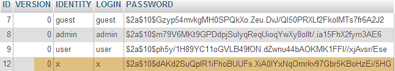 |
الجدول [الأدوار]
 |
جدول [USERS_ROLES]
 |
الآن دعونا ننظر إلى الفئة الثانية [UsersTest]، وهي اختبار JUnit:
|
package rdvmedecins.security;
import java.util.List;
import org.junit.Assert;
import org.junit.Test;
import org.junit.runner.RunWith;
import org.springframework.beans.factory.annotation.Autowired;
import org.springframework.boot.test.SpringApplicationConfiguration;
import org.springframework.security.core.authority.SimpleGrantedAuthority;
import org.springframework.security.crypto.bcrypt.BCrypt;
import org.springframework.test.context.junit4.SpringJUnit4ClassRunner;
import rdvmedecins.config.DomainAndPersistenceConfig;
import com.google.common.collect.Lists;
@SpringApplicationConfiguration(classes = DomainAndPersistenceConfig.class)
@RunWith(SpringJUnit4ClassRunner.class)
public class UsersTest {
@Autowired
private UserRepository userRepository;
@Autowired
private AppUserDetailsService appUserDetailsService;
@Test
public void findAllUsersWithTheirRoles() {
Iterable<User> users = userRepository.findAll();
for (User user : users) {
System.out.println(user);
display("Roles :", userRepository.getRoles(user.getId()));
}
}
@Test
public void findUserByLogin() {
// user [admin] is retrieved
User user = userRepository.findUserByLogin("admin");
// we check that his password is [admin]
Assert.assertTrue(BCrypt.checkpw("admin", user.getPassword()));
// check admin / admin role
List<Role> roles = Lists.newArrayList(userRepository.getRoles("admin", user.getPassword()));
Assert.assertEquals(1L, roles.size());
Assert.assertEquals("ROLE_ADMIN", roles.get(0).getName());
}
@Test
public void loadUserByUsername() {
// user [admin] is retrieved
AppUserDetails userDetails = (AppUserDetails) appUserDetailsService.loadUserByUsername("admin");
// we check that his password is [admin]
Assert.assertTrue(BCrypt.checkpw("admin", userDetails.getPassword()));
// check admin / admin role
@SuppressWarnings("unchecked")
List<SimpleGrantedAuthority> authorities = (List<SimpleGrantedAuthority>) userDetails.getAuthorities();
Assert.assertEquals(1L, authorities.size());
Assert.assertEquals("ROLE_ADMIN", authorities.get(0).getAuthority());
}
// utility method - displays items in a collection
private void display(String message, Iterable<?> elements) {
System.out.println(message);
for (Object element : elements) {
System.out.println(element);
}
}
}
- الأسطر 27–34: اختبار مرئي. نعرض جميع المستخدمين مع أدوارهم؛
- الأسطر 36–46: نتحقق من أن المستخدم [admin] لديه كلمة المرور [admin] والدور [ROLE_ADMIN] باستخدام [UserRepository]؛
- السطر 41: [admin] هي كلمة المرور النصية. وفي قاعدة البيانات، يتم تشفيرها باستخدام خوارزمية BCrypt. وتقوم طريقة [BCrypt.checkpw] بالتحقق من تطابق كلمة المرور النصية المشفرة مع تلك الموجودة في قاعدة البيانات؛
- الأسطر 48–59: نتحقق من أن المستخدم [admin] لديه كلمة المرور [admin] والدور [ROLE_ADMIN] باستخدام [appUserDetailsService]؛
تم تشغيل الاختبارات بنجاح مع السجلات التالية:
2.14.7. استنتاج مؤقت
تمت إضافة الفئات الضرورية لـ Spring Security مع تغييرات طفيفة على المشروع الأصلي. للتلخيص:
- إضافة تبعية لـ Spring Security في ملف [pom.xml]؛
- إنشاء ثلاثة جداول إضافية في قاعدة البيانات؛
- إنشاء كيانات JPA ومكونات Spring في حزمة [rdvmedecins.security]؛
ينبع هذا السيناريو المواتي للغاية من حقيقة أن الجداول الثلاثة المضافة إلى قاعدة البيانات مستقلة عن الجداول الموجودة. بل كان بإمكاننا وضعها في قاعدة بيانات منفصلة. كان ذلك ممكنًا لأننا قررنا أن المستخدم موجود بشكل مستقل عن الأطباء والعملاء. لو كان هؤلاء الأخيرون مستخدمين محتملين، لكان علينا إنشاء روابط بين جدول [USERS] وجداول [MEDECINS] و[CLIENTS]. وكان ذلك سيؤثر بشكل كبير على المشروع الحالي.
2.14.8. مشروع Eclipse لطبقة [web]
 |
تم تكرار المشروع السابق [rdvmedecins-webapi] في مشروع [rdvmedecins-webapi-v2] [1]:
 |
التغييرات الوحيدة التي يجب إجراؤها هي في حزمة [rdvmedecins.web.config]، حيث يجب تكوين Spring Security. لقد صادفنا بالفعل فئة تكوين Spring Security:
package hello;
import org.springframework.context.annotation.Configuration;
import org.springframework.security.config.annotation.authentication.builders.AuthenticationManagerBuilder;
import org.springframework.security.config.annotation.web.builders.HttpSecurity;
import org.springframework.security.config.annotation.web.configuration.WebSecurityConfigurerAdapter;
import org.springframework.security.config.annotation.web.servlet.configuration.EnableWebMvcSecurity;
@Configuration
@EnableWebMvcSecurity
public class WebSecurityConfig extends WebSecurityConfigurerAdapter {
@Override
protected void configure(HttpSecurity http) throws Exception {
http.authorizeRequests().antMatchers("/", "/home").permitAll().anyRequest().authenticated();
http.formLogin().loginPage("/login").permitAll().and().logout().permitAll();
}
@Override
protected void configure(AuthenticationManagerBuilder auth) throws Exception {
auth.inMemoryAuthentication().withUser("user").password("password").roles("USER");
}
}
سنتبع نفس الإجراء:
- السطر 11: تعريف فئة تمتد من فئة [WebSecurityConfigurerAdapter]؛
- السطر 13: تعريف طريقة [configure(HttpSecurity http)] التي تحدد حقوق الوصول إلى عناوين URL المختلفة لخدمة الويب؛
- السطر 19: تعريف طريقة [configure(AuthenticationManagerBuilder auth)] التي تحدد المستخدمين وأدوارهم؛
يتم التعامل مع تكوين Spring Security بواسطة فئة [SecurityConfig]:
package rdvmedecins.web.config;
import org.springframework.beans.factory.annotation.Autowired;
import org.springframework.boot.autoconfigure.EnableAutoConfiguration;
import org.springframework.http.HttpMethod;
import org.springframework.security.config.annotation.authentication.builders.AuthenticationManagerBuilder;
import org.springframework.security.config.annotation.web.builders.HttpSecurity;
import org.springframework.security.config.annotation.web.configuration.EnableWebSecurity;
import org.springframework.security.config.annotation.web.configuration.WebSecurityConfigurerAdapter;
import org.springframework.security.crypto.bcrypt.BCryptPasswordEncoder;
import rdvmedecins.security.AppUserDetailsService;
@EnableAutoConfiguration
@EnableWebSecurity
public class SecurityConfig extends WebSecurityConfigurerAdapter {
@Autowired
private AppUserDetailsService appUserDetailsService;
@Override
protected void configure(AuthenticationManagerBuilder registry) throws Exception {
// authentication is performed by bean [appUserDetailsService]
// the password is encrypted using the Bcrypt hash algorithm
registry.userDetailsService(appUserDetailsService).passwordEncoder(new BCryptPasswordEncoder());
}
@Override
protected void configure(HttpSecurity http) throws Exception {
// CSRF
http.csrf().disable();
// the password is transmitted by the header Authorization: Basic xxxx
http.httpBasic();
// only the ADMIN role can use the application
http.authorizeRequests() //
.antMatchers("/", "/**") // all URL
.hasRole("ADMIN");
}
}
- السطران 14-15: لقد أعيد استخدام التعليقات التوضيحية من المثال؛
- السطران 17-18: يتم إدخال فئة [AppUserDetails]، التي توفر الوصول إلى مستخدمي التطبيق؛
- السطران 20-21: تحدد طريقة [configure(HttpSecurity http)] المستخدمين وأدوارهم. وهي تأخذ نوع [AuthenticationManagerBuilder] كمعلمة. يتم إثراء هذه المعلمة بمعلومتين:
- إشارة إلى [appUserDetailsService] من السطر 18، والتي توفر الوصول إلى المستخدمين المسجلين. لاحظ هنا أن حقيقة تخزينهم في قاعدة بيانات لم يتم ذكرها صراحةً. لذلك يمكن أن يكونوا في ذاكرة التخزين المؤقت، أو يتم توفيرهم بواسطة خدمة ويب، إلخ.
- نوع التشفير المستخدم لكلمة المرور. تذكر أننا استخدمنا خوارزمية BCrypt؛
- الأسطر 27-40: تحدد طريقة [configure(HttpSecurity http)] حقوق الوصول إلى عناوين URL لخدمة الويب؛
- السطر 30: رأينا في المشروع التمهيدي أن Spring Security تدير افتراضيًا رمز CSRF (تزوير الطلبات عبر المواقع) الذي يجب على المستخدم الراغب في المصادقة إرساله مرة أخرى إلى الخادم. هنا، يتم تعطيل هذه الآلية؛
- السطر 32: نقوم بتمكين المصادقة عبر رأس HTTP. يجب على العميل إرسال رأس HTTP التالي:
حيث code هو ترميز Base64 لسلسلة login:password. على سبيل المثال، ترميز Base64 لسلسلة admin:admin هو YWRtaW46YWRtaW4=. لذلك، سيقوم المستخدم الذي يستخدم اسم المستخدم [admin] وكلمة المرور [admin] بإرسال رأس HTTP التالي للمصادقة:
- الأسطر 34–36: تشير إلى أن جميع عناوين URL لخدمة الويب متاحة للمستخدمين الذين لديهم دور [ROLE_ADMIN]. وهذا يعني أن المستخدم الذي لا يمتلك هذا الدور لا يمكنه الوصول إلى خدمة الويب؛
يتم تحديث فئة [AppConfig]، التي تقوم بتكوين التطبيق بأكمله، على النحو التالي:
 |
package rdvmedecins.web.config;
import org.springframework.boot.autoconfigure.EnableAutoConfiguration;
import org.springframework.context.annotation.ComponentScan;
import org.springframework.context.annotation.Import;
import rdvmedecins.config.DomainAndPersistenceConfig;
@EnableAutoConfiguration
@ComponentScan(basePackages = { "rdvmedecins.web" })
@Import({ DomainAndPersistenceConfig.class, SecurityConfig.class })
public class AppConfig {
}
- تم إجراء التغيير في السطر 11: حيث يحدد أن هناك الآن ملفين للتكوين يجب استخدامهما: [DomainAndPersistenceConfig] و [SecurityConfig].
2.14.9. اختبار خدمة الويب
سنقوم باختبار خدمة الويب باستخدام عميل Chrome [Advanced Rest Client]. سنحتاج إلى تحديد رأس مصادقة HTTP:
حيث [code] هي السلسلة المشفرة بـ Base64 [login:password]. لإنشاء هذا الرمز، يمكنك استخدام البرنامج التالي:
 |
package rdvmedecins.helpers;
import org.springframework.security.crypto.codec.Base64;
public class Base64Encoder {
public static void main(String[] args) {
// we expect two arguments: login password
if (args.length != 2) {
System.out.println("Syntaxe : login password");
System.exit(0);
}
// we retrieve the two arguments
String chaîne = String.format("%s:%s", args[0], args[1]);
// encode the string
byte[] data = Base64.encode(chaîne.getBytes());
// displays its Base64 encoding
System.out.println(new String(data));
}
}
إذا قمنا بتشغيل هذا البرنامج مع الحجتين [admin admin]:
 |
نحصل على النتيجة التالية:
الآن بعد أن عرفنا كيفية إنشاء رأس مصادقة HTTP، نقوم بتشغيل خدمة الويب التي أصبحت آمنة الآن. ثم، باستخدام عميل Chrome [Advanced Rest Client]، نطلب قائمة بجميع الأطباء:
 |
- في [1]، نطلب عنوان URL الخاص بالأطباء؛
- في [2]، باستخدام طريقة GET؛
- في [3]، نقدم رأس مصادقة HTTP. الرمز [YWRtaW46YWRtaW4=] هو ترميز Base64 للسلسلة [admin:admin]؛
- في [4]، نرسل طلب HTTP؛
استجابة الخادم هي كما يلي:
 |
- في [1]، رأس مصادقة HTTP؛
- في [2]، يقوم الخادم بإرجاع استجابة JSON؛
- في [3]، قائمة الأطباء.
الآن دعونا نجرب طلب HTTP برأس مصادقة غير صحيح. والاستجابة هي كما يلي:
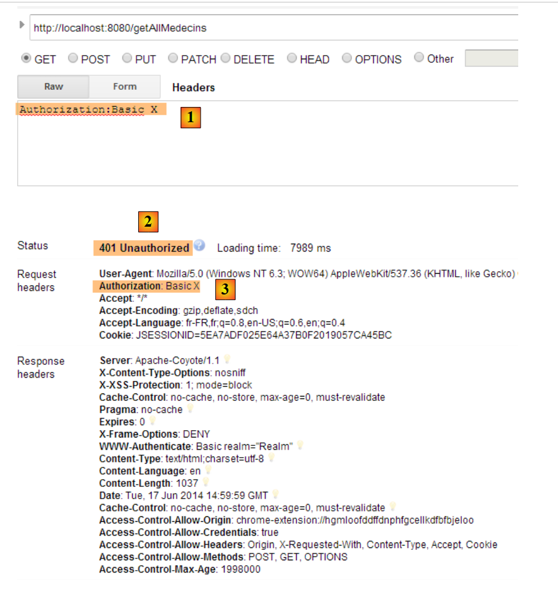 |
- في [1] و[3]: رأس المصادقة HTTP؛
- في [2]: استجابة خدمة الويب؛
الآن، دعونا نجرب المستخدم / user. إنه موجود ولكنه لا يملك حق الوصول إلى خدمة الويب. إذا قمنا بتشغيل برنامج الترميز Base64 مع الحجتين [user user]:
 |
نحصل على النتيجة التالية:
 |
- في [1] و[3]: رأس مصادقة HTTP؛
- في [2]: استجابة خدمة الويب. وهي تختلف عن الاستجابة السابقة، التي كانت [401 غير مصرح به]. هذه المرة، تمت مصادقة المستخدم بنجاح ولكنه لا يمتلك أذونات كافية للوصول إلى عنوان URL؛
2.15. خاتمة
دعونا نستعرض البنية العامة لتطبيق العميل/الخادم الخاص بنا:
 |
أصبحت خدمة الويب الآمنة جاهزة للعمل الآن. سنرى أنه سيتعين تعديلها بسبب المشكلات التي ستظهر أثناء تطوير عميل Angular JS. لكننا سننتظر حتى نواجه المشكلة لحلها. سنقوم الآن بإنشاء عميل Angular الذي سيوفر واجهة ويب لإدارة مواعيد الأطباء.